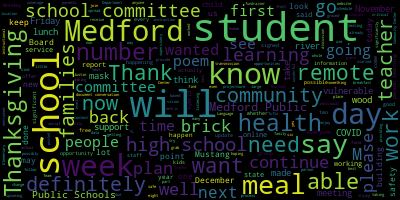
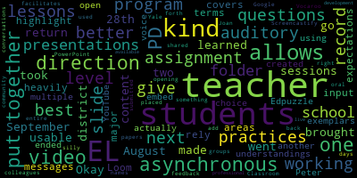

AI-generated transcript of Regular School Committee Meeting November 16, 2020
English | español | português | 中国人 | kreyol ayisyen | tiếng việt | ខ្មែរ | русский | عربي | 한국인
Back to all transcripts
Heatmap of speakers
[Lungo-Koehn]: provisions of the Open Meeting Law, Chapter 30A, Section 18, and the Governor's March 15, 2020 order imposing strict limitations on the number of people that may gather in one place. This meeting of the Medford School Committee will be conducted via remote participation to the greatest extent possible. Specific information and the general guidelines for remote participation by members of the public and or parties with the right and or requirement to attend this meeting can be found on the City of Medford website at www.medfordma.org. This meeting members of the public who wish to listen or watch the meeting may do so by accessing the meeting link contained herein. No in person attendance of members of the public will be permitted, but every effort will be made to ensure that the public can adequately access the proceedings in real time via technological means. In the event that we are unable to do so, despite best efforts, we will post some City of Medford or Medford Community Media websites and audio or video recording, transcript or other comprehensive record of proceedings as soon as possible after the meeting. The meeting can be viewed through Medford Community Media on Comcast channel 22 and Verizon channel 43 at 6 p.m. You can call in by dialing 1-929-205-6099 meeting ID is 950-0558-0643, which you'll enter when prompted. Questions or comments can be submitted during the meeting by emailing medfordsc at medford.k12.ma.us. Those submitting must include the following information, your first and last name, your Medford street address, your question or comment. Member van de Kloot, if you could Call the roll, please.
[Van der Kloot]: Certainly. Jenny Graham? Here. Kathy Kreatz? Here. Melanie McLaughlin? Here. Mia Mastone? Present. I see you. Okay. Paul Russo?
[Unidentified]: Here.
[Van der Kloot]: Paulette Vanderkloot? Yes. Present. And Mayor Breanna Lungo-Koehn?
[Lungo-Koehn]: Present. Seven present, zero absent. If we could all please rise to salute the flag. I pledge allegiance to the flag of the United States of America and to the Republic for which it stands, one nation under God, indivisible, liberty, and justice for all. Thank you. We have approval of the school committee minutes from November 2nd, 2020. Is there a motion on the floor? Motion to approve the minutes. By member McLaughlin, seconded by member Kreatz, member Ruseau.
[Ruseau]: Yes, thank you. Sorry, there are a lot of documents. We are doing the November 2nd, 6 p.m. meeting, did you say?
[Lungo-Koehn]: It was only one agenda that night, so yes. Okay, sorry.
[Ruseau]: So I just had, let's, I just took some notes on a few things. What was that? All my notes and none of them are actually corrections. So I have nothing to add, I'm sorry. No problem.
[Lungo-Koehn]: Motion to approve? Yep, by Member McLaughlin, seconded by Member Kreatz, roll call.
[Van der Kloot]: Jenny Graham?
[Lungo-Koehn]: Yes.
[Van der Kloot]: Patty Kreatz? Yes. Melanie McLaughlin? Yes. Mia Mastone? Yes. Paul Russo?
[Lungo-Koehn]: Yes.
[Van der Kloot]: Paulette Vanderclute, yes. Mayor Breanna Lungo-Koehn.
[Lungo-Koehn]: Yes, seven in the affirmative, zero in the negative. The minutes are approved. Number three, approval of bills for funds and approval of payrolls.
[Van der Kloot]: Motion of approval.
[Lungo-Koehn]: Motion for approval by member Vanderclute, seconded by member Kreatz. Roll call. Jenny Graham.
[Van der Kloot]: Yes. Kathy Kreatz. Yes. Melanie McLaughlin. Yes. Yes. Yes. Yes. Yes. I just want to say that this week, I went in or last week I went in the day before Wednesday, which is the usual usual signing but since it was Veterans Day I signed on Tuesday. And I will be in this week as well. Nothing. that I particularly want to bring to the attention of the committee at this time. Also going to mention that there will be a curriculum subcommittee meeting this Wednesday from 4 to 5 30. So I hope everybody can attend.
[Lungo-Koehn]: And what's on the agenda for this Wednesday?
[Van der Kloot]: We're going to be talking about a disability awareness information.
[Lungo-Koehn]: Great. Thank you very much. Number Five, we have reports of committees. Committee of the whole meeting, approval of the minutes 11 to 2020. Is there a motion? Motion to approve. Motion to approve by member Kreatz, seconded by?
[Graham]: Second.
[Lungo-Koehn]: Member McLaughlin, roll call.
[Van der Kloot]: Jenny Graham? Yes. Kathy Kreatz? Yes. Melanie McLaughlin? You can say it at the same time with me if you want. Yes. Mia Mustone? Yes. Paul Rousseau? Yes. Paulette Van der Kloot? Yes. Mayor?
[Lungo-Koehn]: Yes. Seven in the affirmative, zero in the negative. Paper passes. We have the rules, policy and equity subcommittee member Rousseau. Approval of the minutes from 11 for 2020 meeting.
[Ruseau]: Yes. Thank you. I got the wrong glasses on. That's why I can't see. So we met again on November 4th. It was a continuation of our previous meeting the month before discussing the calendar. And we did not finish creating our list. We will have one more meeting to actually put that forward to the full committee. We did make one recommendation that came out of the committee, and that was to move the, we have a current policy, which is that the committee, that the superintendent will put forward by May 30, May 31st, the new calendar for us to approve. And after discussion in the meeting, the subcommittee voted to move to the full committee to change that policy to have that occur in our first November meeting for the following academic year so that families can plan ahead. I'm sure that many of the members have received the same questions through the years of, hey, when does school start? When does school end? By people who are better planners than I know I am. So I'm always like, why are you thinking about next year already? So we did approve that. And so if there's a motion to accept that change to the policy, is there a motion?
[McLaughlin]: I make a motion to implement the policy suggestion from the Rural Equity and Strategy Subcommittee.
[Kreatz]: I just have one question. I just want to ask Dr. Maurice if that was okay and doable with the administration on moving it up that many months. Is that something that they would be able to do? It's not for this year, it's just going to be for next year?
[Edouard-Vincent]: Yes, it was for next year. And I was in attendance at the meeting and we had just talked about trying to communicate the calendar and everything much getting on an earlier timetable. So, you know, we're gonna do our best to hit that new timetable. So we were all part of that conversation. Thank you. Second.
[Lungo-Koehn]: Seconded by member Graham.
[Van der Kloot]: Roll call. Member Graham? Yes. Member Kreatz? Yes. Member McLaughlin? Yes. Member Mustone? Yes. Member Ruseau? Yes. Member Van der Kloot? Yes. Mayor?
[Lungo-Koehn]: Yes, I'm in the affirmative, zero in the negative. If I could ask a question about those minutes, just because I wasn't able to attend, I know there's a lot of recommendations about different holidays, are we leaving that up to the superintendent to do her due diligence and try to, are you gonna have another meeting to discuss additional holidays? Okay.
[Ruseau]: Yeah, we have a list that we aren't really settled on that, whether it's an observance list or whatever way we're gonna end up calling it, which will list all of the dates that will be published each year. And there'll be a separate column that instructs the superintendent how to interpret that particular holiday. whether it has to be a day off from school or whether it should be, you know, the teachers and special events should not be scheduled on those dates. So it sort of lays all that out. And then this list can be used by the superintendent each November to go through the list, look up and, you know, a lot of these are, a lot of these religious holidays are based on a lunar calendar or other calendars. And so, you know, they're not like, you know, not like Thanksgiving, where there's a third Thursday of November, they change quite dramatically through the years. So there will be an effort, but it will be an effort of going through the entire list, looking for the ones where we've said no school, figuring out what the date is, and just using that as an input to the calendar. But that is not quite complete. So that will be the next thing that comes back to the committee. Okay, thank you very much. You're welcome. Motion to approve the minutes, maybe?
[Lungo-Koehn]: Motion to approve the minutes by Member Ruseau, seconded by Member Van der Kloot.
[Ruseau]: Roll call, please. Mayor, could I, I'm sorry. Yes, Member Ruseau. I just also wanted to, I don't have the recording for this meeting. There is on page two in the bottom, parts of the minutes, it says, Paul Rousseau, there's a sentence in here that I don't believe that's what I said. And if I did say it, I certainly didn't mean it the way it's written. So I'd like to just amend that to be whatever was actually in the recording. So right now it says, I believe in separation of church and state, but have come a long way towards respecting the faith of our community. I didn't have to go anywhere to respect the face of our community. I've come a long way to value recognizing each of these holidays and that that's an educational opportunity. But this sort of sounds like I came from not respecting the faiths of the community to finally respecting them and that is definitely not the case. So wherever that recording is, if somebody could update the minutes to what I actually said, I would appreciate that.
[Lungo-Koehn]: Okay.
[Van der Kloot]: So roll call. Yes. Member Graham? Yes. Member Kreatz? Yes. Member McLaughlin? Yes. Member Mustone? Yes. Member Ruseau? Yes. Member Van der Kloot?
[Lungo-Koehn]: Yes.
[Van der Kloot]: Mayor?
[Lungo-Koehn]: Yes. Seven in the affirmative, zero in the negative. Minutes are approved. We have Building and Grounds Subcommittee, Member Kreatz, approval of the minutes from 11-5-2020.
[Kreatz]: Yes. So the building and grants subcommittee had a meeting via zoom on November 5th. Subcommittee members, Ms. Van der Kloot and Mr. Russo were present. Also in attendance were Mr. Cles Anderson, parent architect community board development member, Fiona Maxwell, procurement city of Medford, Alicia Hunt, parent and director of energy and environment, and Carolyn Montello Parent. Also present were Chad Fallon, Paul DeLeva, John McLaughlin, Peter Cushing, and Dr. Edouard Maurice. First we discuss the upcoming 2021 subcommittee dates. So our March 3rd, 2021, 5 to 6.30 and June 2nd, 2021 is not good because of graduation. So the new date is May 26th, 2021 at 5 to 6.30. After we discussed the career technical updates from Mr. Fallon, he mentioned that the only positive with the students not being in schools has been the ability to do updates at the Method Vocational Technical High School. Some of the completed projects are the robotics and engineering, classroom lab and engineering shop, paint and labor were provided by painters union DC35. LED lighting was installed in many areas, thanks to Alicia Hunt for her help with that process. Programming and web development moved into a new space with 25 workstations, new carpet squares, paint and new computers. Construction technology lab, desks were built by the students. The current projects are cosmetology. A private donor gave $100,000 to put toward this program, provided for painting, electrical sinks, marble install of workstations, replacement windows, chemical mixing room, eyewash stations, and more. And they're on track to finishing in the next couple of weeks. And it's going to have a really nice name. It's going to be named the Priscilla Hoff Salon. The automotive and technology resurface the paint shop floor at no cost. It was done by apprentices from painters union, the students assisted with the, with the design plans, and they designed a racing flag, like a racing flag design on the wall. The painting was an epoxy process. Sherman Williams and Union shared the cost of the paint. Originally, Mr. Fallon got a quote of $65,000 and $99,000, but it was provided free of charge. This was a once-in-a-lifetime project. I just want to extend my thanks, and we did at the meeting to Mr. Fallon, the students, vocational teachers, apprentices from the Painters Union, Sherman Williams, and the Hoff family for all the work that's being done to continue to improve the Medford Vocational Technical High School. Also, special thanks to Alicia Hunt for the support of her schools in finding ways to get energy efficient resources to all of our schools. We have so many great partnerships. I provided with the group with an update about the brick fundraiser. It's currently on hold. And we'll, you know, update the, you know, the committee with any updates that we have in the future. Then we moved on to the discussion about the member high school front entrance. and Mr. Cless Anderson, parent of high school and middle school students. He's an architect and community development board member, shared a design of Meveritt High School front entrance. Mr. Andreessen met at the site earlier this summer with my fellow subcommittee members and a couple of other people. After the BRIC fundraiser idea, he planned a design of what the front entrance would maybe visualize what it could look like. He volunteered to put together an architectural design. He went to the high school front entrance with five high school students who helped measure the design in the entrance and they counted the bricks. The current ramp doesn't seem compliant to the code. Kless offered a plan to integrate a design into the brick work. The first idea was a map of Medford in blue bricks with personal messages that can be stamped on the bricks. You could have special bricks with landmarks in the town. The second idea was to put the Medford logo into the bricks. We would need to think about whether it was recognizable by the eye. I'm sorry, eye level or like, you know, from a distance. The students offered an idea of a wave or scientific image. It showed a hue wave. Another idea of a simple repetitive pattern, smaller quantity specialized bricks. There were a lot of options on how we can deploy this. Mr. Russo and Ms. Van der Kloot expressed safety concerns with the current ramp. Also discussed there were concerns about the sustainability in the white bricks. Will they get dirty? Kless suggests using all new bricks. So we asked John, you know, if he could get back to us with the cost of what it would cost to replace all the bricks just to get an estimate on that. And then John also asked Mr. Klaus Anderson if he could do an RFP. And we'll consider, you know, the fundraiser after the project or maybe when we get the estimates and then maybe can meet again and talk about the project again. Also on the call was Fiona Maxwell from the Procurement Department in Medford City Hall. She was there to help answer questions and provide us with some information. She mentioned there were a lot of rules we need to follow. It sounds like we have a few different projects going on. Project A is a capital project with new ramp, walls, and bricks. Project B, whether the bricks can be taken out and also an ADA issue, an ADA ramp that needs to be redone. The design work is exempt from limits. If it's over a certain $1 amount, it would need to be sealed for a bid. For example, ramp and signage are compliant of 39M. Purchasing bricks and reselling them make a deliverable good. Architect services make for a bigger project. There were a lot of components under one umbrella that we were all talking about. And I really appreciated Fiona being on the call to know, to guide us and help answer some questions. And she's going to reach out to john, you know, over the next couple of weeks, regarding some of the things we asked for, you know, for him to look into. Miss Carolyn Montello, who's a parent, also volunteered at the site originally this summer. And she's shown a great interest into helping us with this brick project in the design of the front entrance. She noted the original intent was to sell the bricks for scholarships, not to cover the whole cost of the work. So she reminded us of that. And also like what we all talked about was that. I think people will get more excited when we maybe have some sort of a renovated design that we can show people and then maybe do the fundraising of the bricks once we have that design and it will be renovating the school and scholarship program. So what we all came to the conclusion is that the project has evolved into kind of a capital project now, a little bit more or a mix of a capital project and then the fundraiser. So, and Dr. Maurice also, she expressed that this may need to be done in phases staggered over time with the goal of getting the change of a front entrance. And that's what our goal will be is getting the change of the front entrance. And the first step is getting a cost estimate to determine how to move forward from there. So we did ask John to get some numbers on the different phases, especially those not ADA compliant or safe. and I just want to thank John McLaughlin, Klaus Andresen, Caroline Montello. I'm sorry, I put Bill McLaughlin in the minutes. It should be Bill Carr, sorry. Susie, would you be able to update that? I'm sorry, I just noticed it right now. I was getting names mixed up, should say Bill Carr. And the students for their volunteering and assisting with design. I mean, I thought that was so wonderful that the students went out and they enjoyed what Mr. Andres has said was they enjoyed coming up with designs and counting the bricks. And it was just a wonderful to hear that report. And we are very fortunate to have everybody helping us with these future plans and maybe future architects. Thank you. Thank you. Okay. Yeah, no problem. All right. Thank you. All right. Did you have more. Did you just had a couple more. There was. It was a really involved meeting, and I couldn't really cut out a lot. So I'll just run through. I just have them bulleted right now. So john McLaughlin provided updates with see building project. He's waiting for the bathrooms. He's waiting for tiles, samples. He's looking at colors to look the same as the science lab bathrooms. The treads on the stairs are done. I don't know if you remember that we went on that walkthrough and the treads are done. The emergency generator is going to cost over $200,000. There's only $160,000 left in free cash. Between the bathroom project and the generator, we are going to be running into money problems with both of those projects. The Andrews school roof finished this summer. The solar project will finish next summer. Speed signs are on order. The locations are not set in stone, but they're on order. Playground resurfacing, money from the grant CPA, the Columbus and the Brooks are resurfaced. All the broken equipment was replaced before resurfacing. John is going to get some pictures as soon as he can and share them at an upcoming meeting. The radio project system being updated district wide, we have provided new radios to the principal offices and all would be linked to the police in the fire. Dr. Cushing provided an update on the McGlynn complex. They have $40,000 for design at McGlynn. They were reaching out to the city side to make sure that we have procurement done for the soft surface of the playground. The McGlynn was more prone to flooding, and also they're looking for something for students of all abilities and paths in life to give a better access to the playground. And Alicia Height informed us that she is looking at the solar battery storage at the McGlynn School. The goal is to have the noisy work done over the spring break. Dr. Cushing asked if we could do this at the McGlynn. And Alicia Hunt replied, if we did the roof over first, we could do it. And then he asked if we could do a canopy instead. And Ms. Hunt replied that the upfront costs are higher for the canopy and the battery grant is a funded grant. and then the meeting adjourned and you know it was a really really great meeting and I really appreciate everybody and all the attendance and thank you.
[McLaughlin]: Thank you Member Kreatz. Member McLaughlin? Thank you, Member Kreatz. That sounds like it was a really involved meeting. It was. A lot. I had a couple of questions. Specifically, the concerns around the ADA compliance in the ramp. I know that you said Member Van der Kloot and Member Ruseau were also concerned about that. I'm wondering if you know or if John McLaughlin can share with us what the safety concerns are for the ADA compliance with the ramp.
[Kreatz]: I don't believe john mclaughlin I reached out to john yesterday to ask if he was going to be on the call, he is not going to be on the call this evening. So if you want, I mean we could put some questions together in an email.
[Lungo-Koehn]: Yeah, it's just not accessible. Oh, Mr. Member van der Koek, go ahead.
[Van der Kloot]: Yes, so the ramp, as I understand it, was put in to assist loading and unloading, particularly of the musical instruments and whatever. And it was never meant to be ADA accessible. If you recall, there is an ADA accessible ramp at the front of the building. My safety concerns, though, is that because it is there, that it opens us up to concern automatically. As you think about it, there is no railing. When I come out of the building at night from a concert, I have been concerned on many an occasion that someone could make a misstep in the lowered light, even though we've improved lighting there, but it'd be highly possible. And that's for anybody, not only somebody who might also use the ramp, which might have some concerns, maybe wheelchair, whatever, it's clearly too steep for, safe wheelchair. So, but that is not the designated ADA ramp, but it exists. And again, it was put in for, you know, all of a sudden it appeared and there was a reason for its appearance. But for me personally, from the time it's gone in, I've been concerned about it.
[McLaughlin]: Can you orient me, member Van der Kloot, as to where? Sure.
[Van der Kloot]: You're at the front of the building, and you're looking at the doors. And the ramp is, part of it is stairs, but the ramp is right there on the left.
[McLaughlin]: Oh, going into the theater doors?
[Van der Kloot]: No, no, it's outside.
[McLaughlin]: Yes, outside.
[Van der Kloot]: Outside. So you've probably been up and down it 1,000 times, Melanie.
[McLaughlin]: I'm sure I probably have.
[Lungo-Koehn]: This is just a steep, too steep ramp, and then the stairs are to the right.
[McLaughlin]: Okay, but it does not, but there is obviously the other ramp, which is fine and is totally ADA compliant, and it's not an accessibility issue. Correct.
[Van der Kloot]: For me, it's not so much an accessibility issue as my concern about what if someone makes a misstep off the side.
[McLaughlin]: Right, it's a safety issue and maybe more than an accessibility issue. Okay, thank you for that clarification.
[Unidentified]: And then it's not accessible.
[McLaughlin]: It's not ADA accessible. I mean, right. It's a ramp that's not ADA accessible. I understand. And I'm sure that's probably because of the slope. Yeah. And the grade of it, but I'm not sure. I mean, I'm not an expert, but I assume. So I'm, yeah, I would assume John is going to have to get somebody in there to, to think about that. Right. And I, I would just say that obviously if there's prioritizing, it sounds like you said, Kathy, they're going to prioritize anything in that legal realm first. Right. Yeah. Thank you. And then the other question I had is regarding the resurfacing on the playgrounds. I know that the McGlynn School resurfacing, not just resurfacing, but playground as a whole was going to be, as you said, really focused on making an inclusive experience, an inclusive playground for students of all abilities. And I'm wondering, again, maybe this is a question for John or whoever was at the meeting related to that. Is there an expert? And maybe it applies to the same, to the first question as well. Is there an expert in the, you know, field, in the disability field that is advising us on these things?
[Kreatz]: Is Mr. Cushing on the call, Dr. Cushing? Because he might, he is. Yeah, he has his hand raised. Okay.
[Peter Cushing]: I am.
[Kreatz]: Okay, great. Yes, do you know the answer to that?
[Peter Cushing]: So we have been awarded $40,000 from the Community Preservation Fund. And as the COVID shutdown happened, one of the things that we were doing was we were seeking initial ideas from various companies, architectural firms. We now have to formally put it out to bid, given what we're looking for. And we're really looking for someone like you said, an expert in the field, someone to guide the process to make sure that this is not just a regular playground, that it is an accessible playground for all children of all abilities. And just a quick refresh is that the soft surface at McGlynn is enormous. It would be over half a million dollars to replace Justin of itself. It's prone to flooding. and the elements are definitely approaching 20 years old. So now's the time given the size of it, the central location to everybody in the city, that is the time and the opportunity to really take a solid look at a true investment into this playground. So we are right now working through the finance office to make sure that we have all of our appropriate things for procurement done so that we're very correct in that.
[McLaughlin]: Great. And I know the mass office on disability who we've had come and speak in the past, I'm sure you know is available to offer expertise as well and I'll send that contact info to you too and I do realize that there were some meetings around. you know, with some of the recreation and Boston Recreation and other folks who have done this before. I just want to make sure that they continue to be included in the discussion. So what's best way to handle that, Peter? Dr. Cushion, just email you to follow up.
[Peter Cushing]: You can email it a follow up or, you know, in the in the next week or so, once we are able to put this out to bid, we're going to be forming a committee. of interested parents, community members, students, to really be a part of this. The CCSR wants to help out with this. We were able to meet last fall, last fall, my God, blurring together, last spring before everything just shut down and abruptly ended. And so we really wanna continue those conversations. We wanna have a really good understanding and make sure that we maximize this money in having those community conversations and coming up with a well thought out plan.
[McLaughlin]: Thank you. And I would really encourage someone reaching out to the chairs of the Medford CPAC and to the parents of children with disabilities in the school so that they're definitely part of that committee, that there are members that are part of that committee. So thank you so much. Appreciate it.
[Lungo-Koehn]: Thank you.
[McLaughlin]: Member Grim.
[Graham]: On the playgrounds, we passed a resolution at our March 9th meeting to establish this playground advisory committee. And the goal of that committee was not only to be part of the process around the McGlynn Playground Design Study, but also to look at all of our playgrounds for the ways in which we may have had small opportunities to make the playgrounds. you more playful and accessible and inclusive. And I was surprised to see the playgrounds all dug up when I was by one of the elementary schools the other day. So I feel like the intent and spirit of that resolution was that that committee would be formed before any work got done. So we have passed that gate now, but I would ask that that committee be formed before an RFP goes out to bid, because if we don't have good requirements in the RFP bid, in terms of what our vision of making sure that the design firms. are including the right folks, know how to engage the community, et cetera, then we will have missed yet another gate where we could have had community input. We had a really great meeting in early March with a number of people who were interested in this discussion, who had really wonderful and particular ideas about how to do this at all of our playgrounds, not necessarily just at the McGlynn. And I know, you know, Shortly after that, things changed radically. We actually on our April 6 meeting talked about moving the date out a month. And so we're obviously well past that. But I would ask that before an RFP go out, we go back to the resolution that was passed on March 9 and make sure that that committee is formed so that they can be part of the review of what that RFP is asking for and seeking. Um, because we have already missed some opportunities in my opinion to have potentially, um, resurface those playgrounds with, um, with opportunities potentially that we now don't have because we have resurfaced those playgrounds. So, um, I would ask that we sort of cycle back to that original intent and make sure that we engage the community before we move forward further. And then I did have another question about the minutes of this meeting. I feel a little bit lost because I feel like the discussion about the facade of the high school is sort of rolling full steam ahead when we put on hold the vision committee and said that we were going to reform that in this fall. I guess I'm trying to understand how those things fit together and why we would invest in changes to the facade of the building when we haven't made decisions about the vision for the high school as a larger unit in general. And I'm just wondering when that committee of the whole is scheduled for, for the vision committee.
[Edouard-Vincent]: If I may, through the chair, high school vision committee will be at our next, the next committee of the whole is scheduled for December 7th, the same day as our upcoming school committee meeting. So that was going to be the next agenda. At the building and grounds committee, where they were talking about the bricks, the brick project that had already started, the fundraiser that was ongoing. And so in the context of the brick project, which was to beautify the bricks and the front entrance, the conversation continued to happen about, while they're fixing the bricks, what about the other pieces? Like, why don't we continue fixing? So it was more of a conversation and the architect showed his sample drawings that his son and some other of our young Medford students had worked on. He gave them an opportunity and shared that presentation of what it could possibly look like. But nothing was set in stone, if I may use that expression. But it was more where they were talking about the BRICS and the BRIC fundraiser that's taking place. that the bricks would be laid at the front of the main entrance, what would it look like taking out some bricks? And so it was almost kind of like, well, if you're going to fix this, you don't want everything around it to look horrible because you won't even see the beauty of the bricks. But the intention definitely is to have the high school vision committee in December. So we were shooting for the December seventh meeting. There were two things we were trying to go back and forth with, but the vision committee is definitely an upcoming committee of the whole meeting. So rest assured you'll be getting that invite soon. We're just trying to balance. That might need a little more time. And if we think we need a little more time, we might need to play with what day we could start that so that we don't shortchange that conversation.
[Graham]: And there's reference in the minutes to these design drawings that weren't included in our packet. And I just wondered if somebody could include it. Sounds like It's really great work and I definitely would want to see us invite the people who have already participated to be part of the application process for the vision committee, which we can talk about next time. But I'm really curious to sort of see and envision what it might look like. But to your point about installing bricks and not having a bigger plan, I think that's why the vision committee is so critical because every expenditure that we talk about, bathrooms, you know all kinds of things really should you know should be tied into like where does this where does this fit in our sort of master plan which we don't really have right now so I definitely want to see us prioritize that because I think it answers a lot of questions and helps guide us into the future if we take the time to have a thoughtful conversation about that vision sooner rather than later and I know we're already you know unavoidably delayed that discussion, but I think that's really important.
[Edouard-Vincent]: Your point what you just were saying that was part of. I think people actually see what was presented at the building and ground subcommittee that the the Mustang nation out there. they will be inspired and excited about what those new bricks could end up looking like. So I completely agree and we can definitely get that information to all of you and let you see what they were samples, but to at least be able to weigh in so that when we have that committee of the whole, we can show some of that information and the pictures again, images so that people can have a richer discussion about that.
[Graham]: And then Kathy, in your notes, you also referenced that we have run out of money for the projects that we're going to be paid for out of free cash. But I don't recall that your notes said what the next steps were there. If we're running out of money, what does that mean for those projects? Does it mean they don't happen? Does it mean we do half of a project? Like, what is the plan?
[Kreatz]: we would have to go to city council. We'd have to maybe have John McLaughlin would meet with Mr. Murphy and, you know, discuss what the next steps would be if they're going over because they, you know, John's concerns were that it's going to be a problem to do the generator and the bathrooms. There isn't going to be enough. So, I mean, I would think that we would have to go to city council to ask for additional money.
[Lungo-Koehn]: What about the 800,000? Yeah, member, Mr. Murphy.
[Murphy]: Thank you, Mayor. So there is an allocation, an appropriation that was made in the last week of August, totaling approximately $800,000 that is earmarked for capital improvements at the high school. We sought that funding at the time because we had been, an earlier interpretation of the CARES Act funding suggested that some of the emergency HVAC work and some of the other infrastructure projects that were gonna be related to meeting the heightened air quality standards for having school in the midst of the pandemic, that funding was sought in part because of an expectation that it was gonna be necessary. A newer or more recent interpretation of the CARES Act funding positioned us where we're able to essentially draw down on that funding, We haven't yet been able to finalize the priorities for that funding source because the price tag of what it will cost to put the high school in position to have in-person learning under the heightened standards hasn't really been crystallized yet. But it's been our expectation from the beginning that some portion of that funding would potentially be applicable for some of these other capital improvement projects. It's just, we're just not in a position yet to really be able to itemize those and say, this is exactly how much we're gonna have to put toward HVAC. This is how much we're gonna have to put toward portable filtration devices. And therefore this is the portion that we can squirrel away to help offset some of the expenses related to these, the capital improvement projects that have been ongoing. I anticipate that there'll be further discussion about all these issues and we'll be able to lay out for you once we have a clearer sense as to what some of those more sort of emergency oriented facility costs will be. And then we'll know what our position is with regard to how much flexibility we have to put toward those other investments. I do think that's an important point because at this point in time, and obviously the committee take whatever action it sees fit. But the administration at this point is not actively seeking additional funding from the city council. And I think it's important that that point be made clear. That could change, obviously, and it can certainly change by vote of the committee, but I think it would be premature to consider that at the moment, because again, there's too many open questions with regard to what will be necessary related to the HRAC funding and the other pandemic related expenses.
[Van der Kloot]: Rousseau.
[Ruseau]: Thank you, Mayor. Um, you know, I kind of would just emphasize a point that member Graham made about our intent to be involved in this playground resurfacing. Um, you know, on the surface, that was not intentional on the surface of playground resurfacing should not really cause much of a much conversation, frankly, from a school committee that's supposed to be working at the policy level. But, you know, I wrote this post on my personal page a couple days ago, because I was surprised to see the resurfacing was done. And what I said was, my children have finally been able to enjoy a part of the playground at their elementary school that has been broken longer than they have been going to school. I'm thankful to the residents of Medford for the CPA funds that accomplished this maintenance work that was out of reach for so many years. However, I ask that we as residents think deeply about our priorities, such that our schools have so little money that the playground is finally functional for my son now at the age of 14, and he's five foot nine, rather than when he needed it at the age of five years of age. I want to celebrate this work, but it is really hard. It is the unacceptable level of funding that leads us to a place where we celebrate basic maintenance instead of real progress for our children and their education. We have much to do in Medford, but it won't be free. And I hope we all will vote with our wallet. So our kids have the basics because the truth is they do not have the basics and they have not for more than a generation. So when we are concerned about resurfacing a playground, we're concerned about resurfacing a playground that there's no reason to believe that this resurfacing isn't a 20 year resurfacing. There's no reason in our financials. And frankly, with a pandemic in progress, doesn't look like it's going to get better. This is a resurfacing that happened at these schools that is going to be a generation before it gets looked at again. So I think it's really unfortunate that we have to care that much about fixing a playground and doing basic maintenance. And it's not why I ran for school committee. I ran to actually improve the education. And I think that's true of literally every other member, but you know, this Medford is not stepping up and has not stepped up for a generation. So we have to care and spend 45 minutes or whatever talking about fixing broken playground equipment. I just think it's unfortunate that's where we're at, but that's where we're at. And that's why I care a lot about the fact that we didn't stop and make sure it was right, because I do not see any reason to believe that within the next 20 years, we'll have so much educational funding that it will be just part of the annual budget to fix the playgrounds, whatever they need, so.
[Lungo-Koehn]: Thank you. So roll call vote. Obviously, member Kreatz moves for approval, seconded by? Second. Member McLaughlin, roll call, please.
[Van der Kloot]: Member Graham? Yes. Member Kreatz? Yes. Member McLaughlin? Yes. Member Mustone? Yes. Member Ruseau? Yes. Member Van der Kloot? Yes. Mayor?
[Lungo-Koehn]: Yes, 70 affirmative, zero in the negative. Minutes are approved. Next we have communications strategy and stakeholder engagement subcommittee member Graham, approval of minutes from 11, 10, 2020 meeting.
[Graham]: Mayor, I'm gonna make a motion to table these to our next meeting if they can be added to the next agenda. Susie asked me to include some additional things in the minutes and I did not get a chance to do that. So I wanna do that before we provide the updated report to everybody. So if I could make a motion to table. Motion to table, seconded by Member McLaughlin.
[Van der Kloot]: Roll call. Member Kress? Yes. Member Graham? Yes. Member McLaughlin? Yes. Member Mustone? Yes. Member Ruseau? Yes. Member Van der Kloot? Yes. Mayor?
[Lungo-Koehn]: Yes. So in the affirmative, zero in the negative, the motion to table is allowed. Number six, community participation. Public participation, emails, questions or comments can be submitted during the meeting by emailing medfordsc at medford.k12.ma.us. Those submitting must include the following information, your first and last name, your Medford Street address, your question or comment. Member Ruseau, do we have any emails yet?
[Ruseau]: We do, we have two. I will start in the order I received them. Thank you. This is from James Donovan of Boston Avenue. Here's school committee members. I submitted this email at the last meeting and I have not received an answer. I don't believe that most of these questions require research. I was hoping I could get a response tonight in a public forum. I've highlighted my original email below. It is my understanding that the MPS has purchased new Apple laptops for every teacher while many of the district students navigate remote learning with inferior Chromebooks. I have been told by a committee member that they were purchased with funds from the state for the sole purpose of enhancing remote learning. I was hoping to get the following questions answered at tonight's meeting in a public forum. One, and I will stop for a moment between the questions in case somebody wants to jump in with an answer. Number one was, what was the exact cost of the laptops and accessories?
[Murphy]: I believe we prepared written responses to these questions, but it sounds like perhaps the response did not get to the constituent. It'll take me a minute or two to track down exactly the full response, but I've seen a draft of an email in which there was a response to each of the four or five questions. But if you'd like to read them, I'd rather find the document and send it than for us to ad lib. but I'll defer to the committee.
[Ruseau]: Okay, I'll just read the other questions and some of them don't require an exact dollar amount. So number two is, were they purchased with grant money? And if so, what was the total amount of the state grant and which grant was the purchase made under?
[Peter Cushing]: I don't know if we have the... So I can answer that if you'd like. They were purchased with funding from the CVRF School Reopening Grant Program. providing resources to school districts to improve remote and hybrid teaching and learning.
[Ruseau]: Thank you. Number three is if the funding source was FY 2021 Remote Learning Technology Essentials Grant, how was the MPS able to circumvent the focus areas required by the grant, that being the internet access for students or devices for students?
[Peter Cushing]: So there was no circumvention of anything. The funds from the Remote Learning Technology Essentials Grant were used to purchase Chrome tablets for younger students and assistive technology, such as larger screen Chromebooks, iPads, headsets, and other various technology pieces of equipment for students to meet the needs of students with special needs in the remote and hybrid learning situations. This equipment has not yet been received. There was a delay in grant notification, a delay in the award set up by the Department of Elementary and Secondary Education, And we are seeing significant delays in the delivery of devices and resources by vendors and manufacturers as the supply chain has been substantially disrupted by COVID.
[Ruseau]: Could the funds have been used to improve the Wi-Fi at our schools, especially Medford High School?
[Peter Cushing]: So we are actually using $150,000 and that'll be discussed later on this evening, actually.
[Ruseau]: Number five, could the funds have been used to improve the remote learning academy?
[Peter Cushing]: So the CVRF, specifically the school reopening grant program, funded teacher devices, internet improvement, Google Enterprise to upgrade the learning environment options, additional nursing per diem, and filtering for school devices outside of school buildings. CARES Act funding provided student Chromebook devices Um, of which we've received a thousand of the 1800 reordered, uh, K to 12 content library resources for remote hybrid learning Lexia for assessing learning gaps. Uh, we have purchased a substantial amount of internet hotspots for our students. Um, I think we're in the neighborhood of 165 now, but, uh, that is a potential ad lib there. So I apologize, but it is just, uh, we have purchased them. And we continue to seek them to increase the internet capacity for students home and remote learning capacity. So we're using multiple sources of funding for that.
[Ruseau]: Thank you, that was the end of that email. And I have one more email.
[McLaughlin]: Point of information, did we answer the first question that Dave was gonna look at the email on?
[Murphy]: I just forwarded to Mr. Rousseau responses to all five questions, but is the first question the exact cost of the laptops?
[McLaughlin]: And accessories?
[Murphy]: Yes. $1,159 apiece. And we purchased 520 of them. Thank you very much. And the next question is,
[Ruseau]: Hello, my name is Latisha Rocha from Mystic Valley Parkway. I have the following question regarding the next steps in the hybrid plan for school committee members or administrators who know the answer. Vocational students are starting in-person classes and other high school students are meant to follow. What has been done to address transportation needs for high school students? A lot of low income students rely on the MBTA to get to school. The MBTA cannot enforce mask wearing or social distancing measures. So how is that this glaring safety threat being addressed by the school administration, especially as community transmission in Medford and beyond increases exponentially? Thank you.
[Murphy]: Well, I think the only thing I could say in response to that Mr. Rousseau would be that we are and we will continue to communicate to all members of the student body, including high school students who will be relying on public transportation and frankly, just based on their age, interfacing with the community in ways that younger students probably aren't as frequently on a continuous basis. Because all of you have heard Ms. Ray's seven steps to live by in the midst of the pandemic. And continuing to circulate that information and being as vigilant as possible is to some degree the most insulation that the district can provide to students who are going to be, whether it be while availing themselves of transportation services or interacting in experiential learning environments or just living life, are going to face potential exposure. So I think it's something that we're highly cognizant of and something we're very vigilant about. But I think in terms of MBTA enforcement, there is a limitation as to what the district can do. Dr. Cushing, I don't know if you want to add to that.
[Peter Cushing]: So the only thing that I would say to the email is at MBTA.com forward slash COVID-19. The first bullet point is all riders and employees are required to wear face coverings while riding the T. Not doing so may result in fines or removal. from fine issue, sorry, fine issued by the transit police. So our buses in the morning, I've been told only carry students in speaking to the MBTA supervisor. They are doing enhanced disinfecting and cleaning. And I've also been told that our buses, the first run they do is for our high school students. So, you know, As Mr. Murphy was saying, there's limits to what we can do for our high school students on the MBTA, but we ask them to continue to be vigilant and continue to wear their masks as best they can at all times when unable to be physically distanced.
[Lungo-Koehn]: Thank you. Next up, we have number seven, report of superintendent Superintendent's updates and comments. Dr. Maurice Edwards-Edmondson.
[Edouard-Vincent]: Thank you. My remarks today will be a little lengthier because there are a lot of topics that I need to just update the committee on. So I just wanted to preface it. So good evening. The Medford Public Schools objective, first and foremost, is to educate our children. safely and equitably. To say it has not been an easy task during a pandemic is definitely an understatement. But Medford has shouldered on keeping our students and families front and center. It has not been perfect, but this is a playbook none of us ever anticipated. It has taken many, many long hours of planning, community and school committee meetings, discussions with teachers, administrators and staff. We have brought engineers into all of the buildings to gauge the air quality and commence repairs and upgrades where needed. Nothing has been done haphazardly or recklessly. We have planned every move and remained as flexible as possible as our context has evolved. Our families requested the option of all remote learning and hybrid in-school learning, and we prioritized the family choice throughout our reopening process. To that end, we have made significant investments in webcams, microphones, and MacBooks so that teachers could teach effectively, whether remote or live. We have done all of this to improve outcomes for all students. It is my strong belief that bringing students back into our schools is critical for their academic health and social welfare. The American Academy of Pediatrics, along with Medford's Board of Health and our own Health Services Department, support the return to in-person learning. I will say again, our utmost priority is the safety for all. Our students would never have been brought back without the approval of the medical professionals and listening to what the metrics are telling us. Currently, we have over 1,700 students in our schools on the hybrid plan, with 1,260 students receiving remote instruction. Our schools often function as safety nets for many of our students. Our schools provide two meals a day, ensure that pupils receive their medication at the proper time and with the proper dosage. And we are able to keep an eye on the students' physical and mental health. Additionally, at all of our schools, we're offering grab-and-go sites that are providing lunch for families that are remote. At the McGlynn Complex, On average, it's 15 meals a week. At the high school complex, it's 25 meals a week, and the Curtis Tufts. At the Roberts Elementary, it's approximately 95 meals a week. At the Brooks Elementary, 25 meals. At the Andrews Middle School, 100 meals a week. At the Columbus Elementary School, 35 meals a week. And please take note that when we say meals, when students or families are picking up the meals, it's actually two meals, so you can double those numbers. They're picking up breakfast and lunch. I can say to you that today it was a pleasure to once again be out in the field to see smiles and excitement from both our returning eighth graders, students, and our teachers. As humans, we crave social interaction and we will take it even with masks and staying six feet apart. With this addition, Medford now has K through eight in school two days a week and 300 of our most vulnerable students in school four days a week. As I mentioned last week, We are continuing to focus our efforts on removing barriers for reopening the high school to in-person learning as soon as possible. I am optimistic about welcoming our high school students in a staggered capacity over the upcoming weeks. This Thursday, November 19th, we plan to begin welcoming a small portion of our vocational students both 11th and 12th graders back for a modified schedule of in-person hands-on instruction. Phase one will welcome six of our 15 programs to in-person learning at the high school and select field-based learning opportunities. Those programs are cosmetology, culinary, arts, media, technology, health assisting, carpentry, and electrical. This is an exciting learning opportunity for our students, and we are grateful that our students will have this wonderful exposure to authentic learning in the field. I have also shared that we have encountered some challenges with staffing and coverage as we continue to bring more students into our buildings. We continue to need additional support for our classroom supervisory positions, lunch recess coverage, and other non-instructional duties at all of our schools. We are seeking adults who actually enjoy working with students to come join our team and support our hybrid model a few days a week. So if there's anyone listening tonight and you think you're interested, please contact our human resources department, or you can go on the website and complete the form. I want to say that last Friday, when I did the mini commercial, we only had eight people who had signed up as of Friday to support us in the supervisory roles. I'm pleased to announce that right now we are up to 20 individuals who have taken on the challenge and said they're willing to come join and be part of Team Mustang. We were hoping for 25, but we do need significantly more volunteers who are willing to work at the secondary level as well. So again, we have 20 individuals who have signed up and we are asking for more if possible. so that we will be able to ensure coverage, whether it's reverse remote or for non-instructional supervisory roles. So if you're on the fence and you're not sure, you can also call our human resources and they will explain what those responsibilities will be in greater detail. But I do wanna thank all of you who have signed up thus far. As we continue to bring back more students for in-person learning opportunities, we do recognize that COVID numbers are rising across the state. While numbers are on the rise in the community, schools in general have seen very little spread. This context of the low spread in schools has been critical in our planning of providing more opportunities for in-person learning of our students. Please be advised that we can't do this alone. The community at large must work with us and continue to wear masks, not congregate in large groups, sanitize hands and remember social distancing. Please remember that a high number of other communities that surround us are only able to offer remote learning opportunities to their students due to the high rate of transmission of the virus. So in partnership with our teachers, we feel we are giving parents, families, and students options to access education in the best way they see fit. whether it's remotely or hybrid within the Medford public schools. However, we must remain vigilant. So in the event of a possible school closure, this decision would be made collaboratively. Our highest priority is the safety of all our students and staff. So a recommendation for school closure would be made in collaboration with the Board of Health and pertinent data regarding our community in Medford. The school committee would also be kept abreast of any changes and deeply involved in the process. This is an unprecedented time, and the collective voice of school administration, the Board of Health, Massachusetts Department of Public Health, the Medford School Committee, we are all committed to prioritizing the safety of all. And if this decision needed to happen, we would use all media platforms to fully inform the school community and the community at large. To that point, beginning in December, we are hoping for December 1st, the Medford Public Schools will begin to individually COVID test students to gather some baseline data. We are in the process of working with our principals and administrators to coordinate the testing. We appreciate the extensive work that has been done by nurse Toni Wray, our director of health services, along with all of our nursing staff, the City of Medford, Tufts University, the Broad Institute, Armstrong Ambulance, Mary Ann O'Connor, everyone working collaboratively to try to provide this service. More detailed information will be sent to families in the near future, but please keep that in mind that Medford Public Schools, we want to keep not only staff and teachers safe. We want the students to be safe as well. And we are hoping that this is something that we will continue to do, and we will keep you informed of that. Following my remarks today, you're going to receive a more detailed public health update from Marianne O'Connor and Toni Wray. You're going to find out information today, later, about connectivity in our school buildings, There'll be a report on instructional innovations, as well as contingency plans for our most vulnerable students, and a remote academy update report. All of these reports will show how the Medford Public Schools continues to move forward in this most unprecedented time. For the community, again, I've mentioned it before, but I'm going to say it again. The City of Medford, the Malden YMCA, and the Medford Public Schools, we are providing free grab-and-go meals for all kids ages 18 and under. So kids or students do not need to attend the Medford Public Schools, and primary guardians do not need to be present to obtain the meals. This program is going to continue throughout the school year, Monday to Friday, with breakfast and lunch. So this schedule is as follows. YMCA offers meals at Haynes Square, 1145-1, the Tufts Park Pool, 1145-1, Medford's Recreational Center, 1145-1, and the Willis Ave Apartments, 1130-1. Medford schools, the McGlynn, Complex, Columbus, Roberts, Andrews, and Brooks, all of those schools offer meals from 11 a.m. to 12.30 p.m. every day, Monday to Friday. Medford High School offers lunch and breakfast pickup from 10.30 a.m. until noon every day. Additionally, I know some of the school committee members mentioned this before. Brooke Hoyt of the Board of Health told me today that they were in the process of putting together a group of volunteers to deliver meals to approximately 20 families. A number of our teachers have already signed up with her to assist, and I want to thank them in advance. The West Medford Community Center is also collaborating with the Neighborhood Kitchen Restaurant to provide up to 200 free meals to low-income Medford residents. These meals will be distributed at the West Medford Community Center on Monday, November 23, from 5 to 7 p.m. People will need to sign up to receive their plate either online or by calling the West Medford Community Center at 781-483-3042, and they will add you to the list. Plates will be available for pickup at the community center. Special arrangements will be made for anyone requesting delivery. I have also included in your school committee packets, the virtual Fells Day flyer. This year, virtual Fells Day is taking place on Wednesday, November 18th. And I wanna take this opportunity to thank Ms. Ivy Carnabucci of our science faculty for arranging this opportunity. A former Mustang is doing wonderful things in the community. Our former student, Mr. Justin Tseng, currently a junior at Harvard University and the chair of the Harvard Public Opinion Project, recently wrote a commentary for WBUR entitled, The 2020 Youthquake is Coming. In the piece, Justin discussed the importance of increasing numbers of young people, ages 18 to 29 to vote, In his article, Justin spoke about having serious discussions about racial justice and the COVID response with his friends. He found that a lot of friends were anxious about their futures, and that is why they plan to vote. We are so proud of Justin for continuing his leadership role in college. Once a Mustang, always a Mustang. Also, our World Language Club, they are selling face masks with flags as a fundraiser. If you're interested in one mask, it's $3, two masks it's $5, and five masks for $13. Ms. Bobo is leading it up and you can reach out to her. She's leading the World Language Club. Unfortunately, due to COVID, We believe that this is going to be the first time since 1889 that there will not be a Thanksgiving football game versus Malden on Thanksgiving day. That's really something to think about. Medford and Malden have played each other since 1889, and due to COVID, this is the first year that it's not gonna be able to happen. But we will pick it up again next year. So speaking of Thanksgiving, the school schedule for the week of Thanksgiving will be as follows. Monday and Tuesday will be regular days, but Wednesday, November 25th is our all remote day. And it usually is a half day. November 26th is Thanksgiving, and Friday, November 27th is off. So again, next week, instruction will take place on Monday and Tuesday. Wednesday is our half day, and Thursday and Friday, we have off for the holiday. Please be advised, again, that there will be no in-school or remote learning on those days. Please enjoy the holiday. Also, and this is very important, for those families who may be traveling to see family and friends over Thanksgiving, please think about the governor's guidance of not being in groups larger than 10 inside. It's for everyone's safety, health, and wellbeing. But if for some reason you are required to travel, I'm asking you as parents on the honor system, if you do travel, when you come back, please take your child for free COVID test. Free COVID testing is available. You can go to the state's website and look up mass.gov forward slash stop the spread and find a location that's close to you where you can take your child for free testing before you return your child to school. It's for the health and safety of everyone involved. I want to say, and what would Thanksgiving be without a Thanksgiving poem? And this is my last piece. I want to share a poem with you from a wonderful Medford resident who's no longer with us. She's a famous author. Her name is Lydia Maria Child. She was born in Medford on February 11th, 1802. She is best known for the famous poem, Over the River and Through the Wood, which most people think is a Christmas poem. The actual name of the poem is the New England boys song about Thanksgiving day. Ms. Child was an ardent abolitionist, prolific writer, and is ranked among the most influential women of the 19th century. She wrote the first comprehensive history of both American slavery and the history of women. Her Thanksgiving Day poem was written in 1845. and gained its lasting popularity in 1874, when her friend, the Quaker abolitionist poet, John Greenleaf Whittier, included it in Child Life, an anthology of poetry for children. Eventually, the poem was set to a tune by some unknown person. The more modern song version is now considered a Christmas classic. I would like to share the poem with you now. Over the river and through the wood, to grandfather's house we go. The horse knows the way to carry the sleigh through the white and drifted snow. Over the river and through the wood, oh how the wind does blow. It stings the toes and bites the nose as over the ground we go. over the river and through the wood to have a first-rate play. Hear the bells ring, ting-a-ling-ding, hurrah for Thanksgiving Day. Over the river and through the wood, trot fast my dapple gray. Spring over the ground like a hunting hound for this is Thanksgiving Day. Over the river and through the wood, and straight through the barnyard gate. We seem to go extremely slow. It is so hard to wait. Over the river and through the wood, now grandma's cap I spy. Hurrah for the fun. Is the pudding done? With that said, I would like to take this opportunity to wish each and every one of you a safe, blessed, and socially distanced Thanksgiving. If you don't celebrate the holiday, enjoy the time off. Be well, stay safe, and wear your mask. Thank you.
[Lungo-Koehn]: Thank you, Dr. Edward-Vincent. Member McLaughlin and Member Ruseau?
[McLaughlin]: Thank you. Dr. Edouard-Vincent, and happy Thanksgiving to you. Thanks for the poem, appreciate it. Two questions I had. One was, I really appreciated you sharing Justin Singh's article. It was really... well-written, I enjoyed it. And it made me miss Justin. And it also brought to mind the question of a student rep for our school committee. And I'm wondering what happened to our student rep for school committee. If somebody knows or if we can, you know, re-engage or something, that would be really great. Cause I think it's an important role.
[Edouard-Vincent]: I will definitely be able to follow up with Mr. DeLeva and have our student reps online for our next meeting.
[McLaughlin]: Thank you, that would be great. And then, you know, I understand from the last message you were saying, you're hoping to get more information to seniors, is that right, by the end of this week?
[Edouard-Vincent]: So we're expecting another report, as you know, reports, but we are expecting another report. Significant progress is being made on the high school. So we are very optimistic. We have a good amount of rooms that are now online and we are working with some of the restrooms and a few other critical areas that also need to be online. But we know next week is an abbreviated week. But I'm hoping for. possibly some good news on November 30th, right after Thanksgiving, or very, very close, if not the 30th, maybe by the 3rd of December, to possibly have another cohort of students coming in at the high school level. So we are making significant progress and I'm equally excited, I have to say, about the 20 individuals who have signed up to join Team Mustang and you know, we know that a significant number will need to be at the high school where it is, you know, so much larger to have that supervision to support the reverse remote. So that's the one piece that, you know, between now and then we get enough people on board, we should be able to make it work provided, you know, all of these other areas that originally were not online, you know, I know CAF2 is back online. So good progress is being made so that as we have larger numbers of kids come into the buildings, we'll be able to continue with a staggered hybrid, starting with that.
[McLaughlin]: Thank you. We're looking forward to that. To that good news. And also wanted to say thank you for the food distribution and for specifically for, you know, working to help address those who are unable to come get the food. I was really glad to hear that Brooke and the city are working together to make sure that our families are getting the meal. So thank you very much.
[Lungo-Koehn]: Member Ruseau.
[Ruseau]: Thank you. That was a lot, as it always is. It's a lot to cover. The number of meals being served, those numbers were, well, frankly, quite depressing. I mean, are we even talking 1% or a 10th of a percent of meals typically served?
[Edouard-Vincent]: I would like to be able to present a more robust more robust meal numbers. I know with the other locations that I listed, I don't have the other locations numbers to try to figure out, is it possible that a significant number of our families are going to Haines Square in some of the non-school based places that they're getting meals? So I actually would like to, be able to present at an upcoming meeting what our numbers are, especially as we have more students coming in, of who's accessing the grab-and-go breakfast and lunch, and see if there's a way to figure out who's accessing the grab-and-go lunch at the other city locations, so that that could explain the discrepancy in some of the numbers there.
[Ruseau]: Thank you. I think that would be great to hear. We have on our later on in our agenda, we are certainly gonna be talking about hunger and the snap gaps. So those numbers were kind of hard to hear, frankly. 15, it's a tiny little number. 15 is probably served in like the first three minutes of school every day in a normal school year. My other question was around, actually we have an update coming up on the, public health stuff. So I'll wait on my other question. Thank you.
[Lungo-Koehn]: Thank you. We have number two COVID-19 public health update and testing update report. Ms. Toni Wray.
[Wray]: Good evening, everyone. Mary Ann O'Connor is not available to be with us tonight, so I will share a few bits of information that she passed on. Currently Medford is in the yellow zone averaging 21 positive cases a day. This is the highest rate since last May or early June. Our positivity rate is 0.96% and 50% of the cases are in young adults between 20 and 39. The health metrics were changed last week by Governor Baker and now are based on the size of the municipality and also incorporates the positivity rate. Cities must stay below a 4% positivity rate to maintain students in school. For school-related data, the staff surveillance testing, since the end of September, we have tested over 2,500 staff members, meaning we've done 2,500 tests and have only yielded three positive tests to date. That is very encouraging. For student COVID activity in school, between November 1st and November 15th, Nine students tested positive after community or family exposure. Six students are remote learning students. Three students are hybrid. There were nine students that were determined to be close contacts from those positive cases and are being quarantined. Four of those nine students are siblings. So it is a family exposure. The remaining five were from community contact and not from in-school transmission. School nurses are presently monitoring 38 students for community and family exposure, which are unrelated to the nine positive school cases. Staff COVID activity between November 1st and November 15th. There were three positive cases that were determined to be from community exposure. 10 staff were quarantined as a result of one in-school exposure, all tested negative after the exposure. Eight staff members are currently being monitored because of community and family exposure. And we have one staff member who was quarantined after a possible in-school exposure. I've received some emails regarding questions with questions and confusion about what defines an infectious period. So I'll address that tonight. An infectious period pertains to disease positive person and is defined as a period of time when the person is capable of directly or indirectly transmitting infectious material. For COVID illness, this is defined as two days prior to the onset of symptoms or two days prior to the date of a positive test, and it continues for 10 days forward. It differs from incubation period, which is defined as the time between the day when one is infected or exposed with the virus and the day that the symptoms begin. For COVID illness, this is defined as 14 days past the date of exposure. I hope this is helpful as we try to explain quarantine and isolation dates to families and staff members.
[Lungo-Koehn]: It is, thank you, Ms. Rae. A member so. Okay.
[Ruseau]: Thank you. The minus two days, thank you for your report. I know you're working round the clock, literally seven days a week. So I do greatly appreciate how exhausting this is for everyone in your profession. The minus two days though, confuses me. If I contract COVID today, and I get a, let's say two days from now, I go get a test and I'm positive. Minus two days makes sense. If I wait 10 days and go get a test, minus two days no longer makes any sense. So where does the minus two days come from?
[Wray]: That's epidemiology practice. And your two days can be your prior to any onset of symptoms. In the absence of symptoms, they define it as two days prior to the positive test. That's just the principles that we follow and that the Board of Health follows from the Department of Public Health Division of Epidemiology. I wish I could explain it better, Paul. I'd have to have one of the epidemiologists on here to give you that specific information.
[Ruseau]: It just fails basic logic. So regardless of who says it, it fails basic logic. So, I mean, I will accept that that's the current recommendations. And if that's the current recommendations, that's what they are. And I recognize that when there's a huge number of unknowns, you have to set up something to work with. But it also is hard to not acknowledge that it is illogical. It is 100% illogical for an asymptomatic person who test positive, if they took a test every day, then maybe you could come to some kind of like two days make sense, but nobody takes a test every day. So, you know, this working back two days and then if somebody was interacting with that person three days ago, they don't get contact traced. I just find that to be a pretty massive gaping hole you could drive a truck through. especially for asymptomatic people when frankly there's so little known about them even today. So I just, I don't even know where to go on that.
[Wray]: I can give you names of people at DPH if you'd like to pass that forward to them.
[Ruseau]: Yeah, I went to the CDC website. There was nothing that mentioned this two days backwards. And as much as I want to trust our state, frankly, I don't. They've given us plenty of evidence that trust of them right now is pretty weak. Giving trust to them requires evidence and they've given us the opposite of that. So, you know, the CDC, while I realize it's presently politically slanted right now, there's nothing I could find on this two days back thing. And so, you know, in my emails I did say, Can I get a reference? You know, I work in a healthcare organization. When somebody publishes something, there's a laundry list of references to the studies, or even, you know, when there aren't studies yet, but you have to make an action, there's an explanation. The two days back, I don't know where that's coming from, and I would like to know other than somebody told me.
[Lungo-Koehn]: And we've been following the two days since, since March, including with the schools since September 28th. And it's been very effective with regards to no school transmission, except I think one case, if I have that correct, but.
[Wray]: I can refer you to this website, www.cdc.gov. And if you, there's a PDF on contact tracing and it will explain that, Contact defined as any individual who is within six feet of an infected person for a total of 15 minutes or more, starting from 48 hours before the person began feeling sick until the time the patient is isolated four days later.
[Ruseau]: Yeah, I did find that. And the CDC seems to be completely mum on the topic of asymptomatic patients. Just searching for the words asymptomatic was pretty hard to find anything interesting.
[Wray]: We are learning. This last eight months has been a tremendous learning phase, and we are trying to hold our students and our staff to the utmost mitigation strategies, and we are following everything that has been recommended to us as guidance from the Mass. Department of Public Health. And in the absence of any other information, this is what best practice tells us to do. Thank you. Thank you. Now, David Murphy can introduce some points from the upcoming student surveillance testing program.
[Murphy]: Sure. Thanks, Toni.
[Wray]: Thank you.
[Murphy]: The superintendent referenced this in her comments earlier. It was also included in the superintendent's communication at the end of the last week. We are intending to transition from exclusively staff COVID-19 testing, which we have been facilitating in partnership with Tufts, the Broad Institute and Armstrong Ambulance since the end of September. And we'll continue to do so through the end of this month. And it is our working plan right now to transition to student and staff testing in the first week of December. There are several variables that we still need to finalize in order to operationalize this and make sure that it happens and make sure that it happens in a way that is feasible and does not disproportionately disrupt the instructional day. two things that are important priorities for us, both with regard to this initial phase of student testing and any additional student testing that occurs in calendar year 2021. So as of right now, we intend over the course of the next week to communicate with families and disseminate appropriate consent forms. And then within each school community, to run student testing such that each student is tested once a week. And so students in cohort A would be tested most likely once a week, and then students in cohort B and C would be tested on either Tuesday or Friday, respectively, depending on the individual cohort. That's our current plan. We hope to do three weeks of individual baseline testing throughout the month of December. We're continuing to meet with the folks from Tufts to sort of determine how this is actually gonna be put into practice. And as I said, there are a number of details that we still need to work out, but our priority is to do it in a way that is efficient from a financial perspective, and then importantly, does not serve to disrupt the instructional day. Our hope is that by modeling this throughout the month of December, we'll be in a position to be able to do additional student testing of a slightly different type that we'll be speaking to you about in greater detail in December when students return in the new year. So that's our plan right now. We'll be communicating with families extensively over the coming days. And it is something that staff and families should be prepared for. because there will be a difference in terms of the administration of the testing. It'll be rather than having it a centralized location, it'll be happening throughout each individual school. And again, we're in the process of determining exactly what that will look like at each school and at each level, taking into account, again, the need to not be too disruptive to the school day.
[Lungo-Koehn]: Thank you, Mr. Murphy. Member McLaughlin, then Member Ruseau.
[McLaughlin]: Thank you. I guess as I'm thinking about the student testing, I'm thinking about, you know, my own child with a developmental disability and, you know, her responsiveness to testing and even frankly, myself, you know, I've had, I guess, five different tests now at this point. And I've only done one, the original one was the, you know, I don't know what else to call it, but was the really long sort of brain probe, if you will, which was particularly painful, uncomfortable, you know, not pleasant at all, and has progressively, you know, gotten better in terms of, you know, also because I make it really clear that I'm not doing that one again. So, you know, to the superintendent's point when she was talking earlier about the stop the spread sites, I do want to say, you know, several members of my family have been to the Suffolk Downs Stop the Spread site, and I can tell you from a personal experience, that is a site where it's a very non-invasive, if you will, nasal swab that you administer yourself. They give you the Q-tip or what have you, and then you hand it back. So it was probably of all the experiences, it was the most reasonable. But I'm thinking about this for our is, you know, for all of our children, our younger children, but also, you know, cohort A in terms of, you know, their ability, I guess, or, you know, my concern around the presentation of the testing and ensuring that the testing is the the, I guess, least non-invasive one, particularly for children who might not be that willing in the first place, so.
[Murphy]: It is definitely the lesser invasive one, and that will be the case for all students where part of the looking at how we're going to operationalize this is determining whether older students will be trained to self-swap. That's an issue that we're looking at, and we're looking to see what's age appropriate. and obviously making sure that there's appropriate staffing support for all students, particularly those of higher needs. But regardless, the type of test will not be the one that goes way up there.
[Wray]: Yes, and Ms. Ray. Thank you. I did want to add, Melanie, that I've had conversations with Susanna Campbell, and she is going to develop some social stories that can be used with our students with disabilities so that they will be introduced to the process and will know what to expect during student testing.
[McLaughlin]: That's fantastic. And I guess I would just say, you know, to Joan and Susanna and yourself, that I would not limit those social stories to students with disabilities. I mean, those really apply to our younger kids as well. They're very visual. They're very supportive. It's a nice introduction. So I would really encourage, you know, our general education team and our non-disabled families to get access to those social stories as well, because there's lots of them that Susanna has compiled a great database of, from what is COVID, to wearing a mask, to getting testing, all those things. So I would really encourage folks to let Joan Bowen know or let Susanna Campbell know if you're particularly interested in any of those social stories. There's a nice bank of them that have been building. So thank you, Tony.
[Lungo-Koehn]: Thank you. In relation to discuss the rapid test site, I'm sorry, excuse me. To discuss how easy it is to sign up for testing at the Revere, stop the spread site, you go on mass.gov, under express COVID-19 testing site in Revere, it takes about five minutes. And I just signed my family up for scheduled appointments this Saturday. And that's a way to get your children if you do have transportation to get your Children there to just kind of get used to it. That's not invasive as well. So I just want to bring that up as an option for families that are able to get to a stop.
[McLaughlin]: That's a great idea, Mayor. And also you get the results back within. I think we were under, you know, even 12 hours. It was crazy how fast we got the results back.
[Lungo-Koehn]: Yeah. Member Ruseau.
[Ruseau]: Thank you. Yes, I actually used to stop the spread site and, uh, don't go on Sundays. Most of them are closed, except a couple on Sunday. And when people want to go on a Sunday, they go on a Sunday. The lines were shocking. But the site was free and quick. But I had a question about policy. I'm wondering if we need to have an emergency meeting. We have an approved policy that is on our website that says that when the metrics are eight cases are over in Medford per 100,000 residents, that we will be full remote for all students. I don't believe that is what we want based on the latest information, but it is in fact the current policy and I don't wanna be a bit of a jerk, but in a previous meeting was kind of thrown in my face. We don't want policy that the superintendent violates. That's a bad scene, a bad setup. And we at present have a policy approved by this committee that everybody should be full remote right now. So either we go full remote tomorrow or we have a meeting to fix this, because I don't think operating under a violation of the policy is the goal of our reopening dashboard. So I make a motion that we have a meeting within the next week to adjust these metrics to take into account the governor's newfangled definition of what he personally thinks is important so that we can at least not be in violation of our own policy.
[Lungo-Koehn]: Mayor? Yes, Mr. Murphy.
[Murphy]: I don't, this is obviously completely up to the committee, so I apologize in advance if I'm speaking out of turn, This topic is on tonight's agenda. And so if the issue is you'd like to essentially suspend or modify the metric in the sense that that's an approved policy by the committee, I think you do have that option. COVID-19 and the operation of our protocols is a publicly noticed agenda item. Your discussion is appropriate. And while I know it's the committee's practice, and I think a very sound one, that try to have the wording of a motion on the agenda itself, the legal requirement is that the topic be noticed, which it has been. And so I think you would be potentially in a better position from an open meeting perspective to vote on this issue that you publicly noticed, as opposed to roll the dice on whether or not the issue would warrant an emergency meeting. So I'm just putting that out there as an option.
[Lungo-Koehn]: Yeah, I agree. I agree. I think if we put a motion under 7-2 to not adhere to the metrics prior that we prior voted on prior, that would be sufficient. Mayor. Member Ruseau.
[Ruseau]: Thank you. I honestly cannot imagine that there are not a significant number of parents. I would be shocked if the unions were not interested in the fact that we were gonna go to a situation where we had no metrics for operating our schools in a pandemic. I did not actually agree with the metrics, but I think going to a no metrics seems a bit extreme, frankly. And I can't imagine we will not have our flooded inboxes and some angry union presidents who are like, we've been operating under these metrics that you published and said, and we were okay with that. So I just think going to no metrics right now seems pretty risky. That's just my opinion.
[Lungo-Koehn]: I don't think we'd be going to know metrics. We have the state's new metrics, which say if we go 4% or above with positivity rate, that we'd have to go to remote learning. No questions asked. So I think that's the metrics the state's using, and that's what I think we should follow. I don't know if my colleagues have.
[Graham]: What's our current positivity rate? 0.96%. And how does Tufts multi times a week testing factoring into that positivity rate? It seems like it would be inflating the low number or deflating the number.
[Lungo-Koehn]: They're doing, I don't have the correct number on the top of my head, but they are going to continue through twice a week, each student.
[Graham]: Okay. So our positivity numbers are garbage. I don't know. They're heavily weighted to Tufts. Or are they? How many tests are happening? Two per student, but most they're- But I mean in Medford in general. And what percentage of it is Tufts?
[Lungo-Koehn]: Tufts is asking students that leave on Thanksgiving break not to come back. So the testing is gonna, be reduced after Thanksgiving and further reduced after Christmas, which will potentially increase our positivity rate. If we were going.
[Graham]: Okay, I'm not in favor of hanging our hat on a number that is problematic at best, but that's just me.
[Edouard-Vincent]: I just want to weigh in that. Thus far, the transmission has been, it has really, really been limited at the school level. Because we have, again, like I said, about 1,700 kids in school now. And for the amount of kids that are in school, it is happening. We know the virus exists. But the major transmission is not happening in schools. It's happening in the community, or it's home transmission. So although we've been impacted, it hasn't impacted the schools to the point where the schools cannot function at this point in time. You know, I know that there are other communities that have significantly, significantly higher numbers and it's a different situation, but at least as far as where we've been this far, starting with the eighth grade this week, we've actually been in pretty good shape.
[Lungo-Koehn]: Thank you. Member Van der Kloot, Member Ruseau, Member Graham.
[Van der Kloot]: Yes, I just wanted to ask if you could repeat, how are we getting permission for the students to get tested? Will we have a blanket permission slip? Will we have one? Could you just go over those, that again, please?
[Murphy]: We have a blanket that Desi has provided.
[Wray]: Desi provided a template for us that we could customize to Medford. It does provide parent consent for blanket testing over the course of the school year. We are working on getting that messaging out to families. The letter has to be translated, but our goal is to get it out as soon as possible.
[Van der Kloot]: And if parents opt out?
[Wray]: Then that is duly noted on the classroom roster so that when the testers are gathering students to swab, that we will have an accurate list of who has consent to be swabbed.
[Van der Kloot]: And that will be confidential?
[Wray]: The list?
[Van der Kloot]: Well, I'm just saying that the teacher will know who opts out and not.
[Wray]: Only by default, because you won't be bringing those students to the testing room. This is very similar. The process becomes very similar to vision and hearing and scoliosis screening that the school nurses normally do. of which parents do have the right to opt out and some do.
[Van der Kloot]: Okay. Okay. Thank you.
[Ruseau]: Thank you. Remember Graham actually asked a question that I thank you. Cause I had not fully contemplated the impact of Tufts on our, our positivity rate. So, you know, unfortunately Tufts is not publishing. They have their Medford slash Somerville data. So we don't know, is it 50% Medford, 50% Somerville? But if we just took 50% of the students and said they were Medford, that is 3,000 tests a week at a positivity rate of only 0.26, which is a, I don't know how many tests are happening in Medford, but I'm gonna go out on a limb and bet the majority of tests that are happening in Medford are happening at Tufts. you know, is this dramatically waiting and bringing our positivity rate down to the point where it doesn't mean a thing? I mean, could we, if we subtracted Tufts, are we at 4%? We can answer that question. What I mean is the Board of Health with actual numbers and like individuals can do the subtraction and get that answer. But I feel like it's a bit unfair to say we're at 0.97 when the bulk of the tests that are probably happening in Medford each week are happening to a cohort of people that are getting very low positivity rates. I mean, 0.26% is, I mean, we could really be happy with that. So what is our positivity rate? And I mean, the DPH site doesn't tell us because it includes this institution that's doing a great thing by testing a lot. but it's created this weird situation where I have no reason to trust that positivity rate unless they truly are subtracting all those. And 0.97 is non-student residents, which honestly, the amount of work and the fact that they had to delay release of that data now after Thursdays, I can't imagine they're doing that level of detail. So I'm uncomfortable with just rolling it back to do what the state says. I think we need real conversation with real data And I want to know what is our positivity rate minus the flooded Tufts number?
[Wray]: I'll be in touch with Marianne O'Connor, and we'll have to get back to you about that. That's not something off the top of my head I can calculate out. Thank you. Member Graham?
[Graham]: At every meeting, we get a verbal update with a bunch of numbers that get tossed our way, but those numbers don't ever get reported in formal fashion. I'm a numbers person, but I'm not a numbers person who can just ingest numbers spoken at me and be able to like simultaneously interpret those and remember them. I've already forgotten what Tony said 15 minutes ago. Can we, When we talk about the metrics dashboard, we spent a tremendous amount of time putting that together so that at any point in time, anybody could go look at it and understand where we were at. And we have not kept up our end of the bargain from that perspective. We are not publishing that on a weekly basis. or not filling it out the way that we said that we would. And I think we need to start to do that in addition to revisiting what we thought were the right metrics at the time. I will not vote for anything that just arbitrarily rolls back and puts this decision in the hands of a few. That's not where I'm at personally, but I would like to see us commit to actually publishing data to the community so people can make good decisions for their own family. It appears that we are taking the position that because we have provided options, everyone gets to sort of fend for themselves and make their own choices, which may be fine, that may be workable for lots of people. But I just want to point out, our numbers are as bad as they were in April when the instruction was don't leave your house. So all of a sudden, we're all out caring about our business, which is great. But our numbers aren't that different than when we weren't supposed to leave our homes. And now we're saying school is not transmitting things. Which again, if that's true, it's great, but I would like to be able to sit with the numbers and understand that for myself, which I can't do when it's just sort of spoken at us. I'd like to understand how complete the data set is. So at various times we hear that contact tracing is complicated because people are not cooperating. Well, if people are not cooperating, how are we concluding that school-based transmission is not a thing? And then back to member Rousseau's point earlier tonight, like we don't know that somebody who's asymptomatic and test positive has only had the virus for two days, but yet we're using that and frankly providing instruction to people to not worry too much beyond two days when that may not be a good thing for our community spread anyway. And I just think this warrants a bigger conversation. I will say that I am, I think anyway based on what I can recall about the information that's been shared with us, I'm surprised that we haven't seen more spread than we have seen. Maybe that's because we have welcomed our youngest learners who have the least amount of, I'll say free will about how they move about the community. Maybe that's why. Maybe when we welcome back some of our more mobile students who have freedoms to move about as they see fit that we will see something very different. And I don't think anybody, you know, and certainly not me, I don't want to see us have to close, but I want us to be clear about what it would look like if we did. And I don't want that to feel like an arbitrary decision made by anybody because there shouldn't be anything arbitrary about how we make this decision. So I wanna make sure that we're doing our due diligence as a committee, not putting this weight on the superintendent because that's not what we should be here to do. But I think it should be a collaborative decision. And I do think We need to properly post that this is what we're going to talk about, because there are a number of members of the community who I believe are not here tonight that would want to speak about this, either to say to stick with what we have or to change it or to do something else completely. And I think we owe the community that courtesy as we have this conversation so I would. I think Member Ruseau made a motion to schedule a meeting. It doesn't have to be an emergency meeting. It can be no to 72 hours out. That's fine by me. But I do think we need to have a meeting where we revisit what we're publishing, how we're publishing it, and what those metrics are that are going to drive us forward.
[Edouard-Vincent]: I just wanted to say that the metrics have been updated. The only week that they were skipped, Ms. Suzy Weiss, my executive assistant, has been updating it. She added the state's definition, but there were no changes to Medford standards. It just was to reflect what the changes that the state did, which you know, impact where we would fall. But I just wanted to say that the metrics have been a exception of the week that the state changed the day that they were giving the information out. That was the only week where it did not change.
[Ruseau]: Point of information.
[Lungo-Koehn]: Point of information, Member Ruseau, then Member McLaughlin.
[Ruseau]: you. Thank you. Thank you. Um, Maurice, if that pardon me, Superintendent, if that is true, I will say that I can't find it. And the only place I can find anything is a reference to the October 15th one, which says that it will happen every week, but I cannot find that. So if that's true, it would be great if you could tell us where it's published.
[Edouard-Vincent]: Okay, I'm
[McLaughlin]: I'm feeling, you know, based on both constituent emails and the, you know, member Ruseau and member Graham's comments that I also think that a meeting would be helpful to the community. I think that with the metrics changing from the state level and with all of these unknowns, I mean, I'm going back again to my graduate level stats class and it's like, you can't compare apples to oranges and sort of, or change the data midway and sort of have these comparisons. So I think it would be really helpful. I would also though concur with member Graham that I think we need notice. I think an emergency meeting with is probably not as essential as it is to have notice to the community that this is what the meeting would be discussing, especially as we're thinking about, I mean, we're seeing every time I turn on the news, it's more, you know, dread and danger and mayhem. And it's concerning as we're seeing the numbers rise. And again, if you do a comparison, minus the COVID fatigue to the spring, we were all inside at this point, we weren't interacting with each other. And then you're dealing with this COVID fatigue and people are Interacting more and more and to the point of, you know, this, we keep hearing this data that this is not happening in schools, or that the shares not happening in schools or exposures not happening in schools but there's these unknowns as Member Graham and Member Ruseau were discussing. both of people who aren't responding to the contact tracing and or there's 50% that we don't know about. I mean, that statistics put out there all the time, or there's 50% that we don't know how the contact tracing was. Well, 50% is a pretty large number. We have information. Yeah.
[Lungo-Koehn]: In general, 50% is not associated with our schools. We've been able to contact trace every case within our schools. Tony can confirm that. We've had one school transmission since September 28th. So the 50% is just community-wide, what Mary Ann O'Connor is facing within the community at large. We do not have in-school transmission.
[McLaughlin]: So 50% that we don't know we don't have school transmission is what you're saying. How do we know if we don't know? So that's the state.
[Lungo-Koehn]: You know, Ms. Ray, if you could comment on that. We've been able to track every positive case and find out that it was from family transmission within the household. A parent comes home from work, passes it to the children. Children go in, find out they're positive. Well, nobody else in that class has got it, and we've been able to trace it back to the parents.
[McLaughlin]: That's been- That's 100%, not 50%.
[Lungo-Koehn]: That's 100%.
[Ruseau]: Okay, that's- Point of information, point of information.
[Lungo-Koehn]: Point of information, member Ruseau.
[Ruseau]: Nobody else in that class has it. Unless you tested everybody in that class, how do we make a statement like that?
[Wray]: anybody that was a close contact is notified and I would assume that we would get tested and we'd find out that's a very we are anybody identified as a close contact is advised to be tested at day four to five post exposure, which is a reliable time for receiving a positive test. So we are passing on that information. The nurses are following up with every student. I mean, as I said, we have over 38 students that we are monitoring because of either a community or family exposure, and that has been unrelated to school cases. This information is reported out to DESE on a daily basis, and they have also been able to aggregate data across the state, and communities are finding similar experiences as Medford, that the overall transmission is happening at the community and family level.
[Ruseau]: Thank you, Mayor.
[Lungo-Koehn]: Mayor, I'm sorry, but still could member McLaughlin has the floor.
[Ruseau]: Sorry, member McLaughlin has the floor. You're right.
[McLaughlin]: I'll yield the floor. Thank you.
[Ruseau]: Thank you. I personally know of a case in one of our elementary schools for which the source of that child being positive is completely unknown. So stating that we know that every one of the positives in the school has been from a known source outside of the school is not true. And I take great offense that that is actually the statement being offered up. It is not true.
[Lungo-Koehn]: I try to follow up with every single case through Ms. O'Connor, and it's always traced back from what I've heard. So I don't know, Ms. Ray, if you've heard
[Wray]: I don't have anything additional to add. Paul, I really would like to hire you on my staff to do contact tracing, because it seems like you may have different skills.
[Ruseau]: Well, the parents have been clear that they don't have any idea where the child got it. And the parents have been clear that nobody else in the family is positive. So the child was in school. This seems like an exact example of the opposite of what is being stated as 100%. And I'm sorry, but that's, the community needs to know that that is a pretty interesting interpretation of what I think are pretty simple facts.
[McLaughlin]: Mayor, can we move the question? Member Van der Kloot?
[Van der Kloot]: I was just going to say that it seems, you know, Mr. Rousseau is presenting certain information that Tony's unaware of. And that needs to be a private conversation between the two of them if information wants to be shared so that she can verify it. Because at this point, it's only, you know, working on hearsay, if you would.
[Ruseau]: I have communicated that.
[Van der Kloot]: OK. So, you know, I just, I'm not privy to the details of it. None of us are, except perhaps the two of you, and somehow or another, it doesn't seem like it's really moving us ahead. It sounds like there's some will to have further discussion on this. I have a hard time because I know I'm not an expert. I know I'm a school committee member who has great intentions and wanna do the best for our kids, but I'm not an expert on this. And so that means that I have to listen to experts. And in some places I'm a little worried because I feel like some perhaps of my fellow school committee members think that they can interpret things in a better way than some of the experts. And I'm not, I'm feeling a little uncomfortable about this. I think that we do need to move on. If we're going to have a meeting on it, where the potential would be maybe next Monday, if I threw out a date. I don't know what the will of the entire committee is at this point about it. I'm definitely feeling uncertain. I understand arguments that I'm hearing, but You know, what are the major question is, I've heard some things about metrics and looking into how Tufts changes us, our potential numbers. Clearly, Mr. Rousseau is saying that the current policy that we have is not accurate and needs to be updated. But at the same time, I heard the superintendent say something about that it was being updated
[Edouard-Vincent]: What's posted, if you look at the actual metric, it says the week of November 13th. I went to the website at the top, it said October 15th, 2020, beginning today and every Thursday. That was when the header was posted, but the actual dashboard is for November 13th at the top, because it's looking at the previous three weeks of data. So I just wanted to say, if you scroll down from the October 15th header, when we switched the day and said we would be posting it on Thursdays, the actual document does say November 13th.
[Graham]: A point of information, section three is not filled out and it never has been. So there's some, blanket language there, which is not the intent of what that section is supposed to contain. And I've brought this up multiple times. It's never been populated. So when I say we're not even populating the things that we said we would do, that is what I'm specifically referring to. And so even if the metrics are updated as of last week, the dashboard is incomplete and it always has been.
[Edouard-Vincent]: I don't believe the school committee agreed with what you were saying you wanted in section three. When you click on the hyperlink, it says the Medford Board of Health and Medford Public Schools. This document was what we worked on with the definitions with the frameworks group. We worked on this in collaboration. and we talked about the different scenarios so I'm not sure what else you're asking for but what is posted is what we agreed to when we met as a group. That I know.
[Lungo-Koehn]: Okay we're going to move the question member McLaughlin.
[McLaughlin]: Thank you. Yeah, I just for the other members, I guess benefit and for those that are listening, I guess what I think is being asked is that we have a meeting to discuss under what circumstances we would end up being all remote again, given what we're seeing in metrics as a whole, not just in the city, but in the country and to have a meeting to discuss. Um as a state of affairs in general is that accurate? Is that what the motion was to have a meeting to discuss under what circumstances we would. Be going remote and what the no.
[Ruseau]: No my motion was to have a meeting to develop a set of metrics that. I feel like I'm a bit conservative in this approach. And even I agree that metrics we have, we don't want to keep.
[McLaughlin]: Right. And I think the metric that you were referring to when I heard what you were saying was specifically the metric of what happens, the 8 to 100,000 equals remote. And so that was where I was sort of My inclination is that we need to have a meeting to discuss under what circumstances we are going remote or if we were gonna go remote and what the implications of that would be so that we have that clear to the community under what those circumstances were. Because as you said, member Ruseau, the metrics have changed both from a state perspective and not yet from a Medford perspective. So I guess that would be inclusive of what you're discussing.
[Ruseau]: Yeah, I would just keep it short to say to update our metrics to meet the current guidance. Yeah.
[McLaughlin]: Okay, thank you.
[Ruseau]: Sorry, I don't really have a more specific, I didn't come to this meeting prepared to say, here's some new metrics, let's use these. That I felt should be a whole meeting with some time for us to get our heads in order and figure it out.
[McLaughlin]: May we move the question, Mayor?
[Lungo-Koehn]: Yes, if I just may, before the question is voted on, just for the record, I don't feel, I have no problem having meetings, many meetings. I just feel like the admin and Ms. Ray and Ms. O'Connor are doing such a great job, not only keeping us all informed, but work in each contact tracing situation as best they can. And I don't feel like us having a meeting is necessary at this point. Will it be necessary in two weeks or three weeks if we see in-school transmission? Absolutely. But right now that's gonna, my vote is based on that. And I trust the administration and our board of health and head nurse of the schools to make these decisions, which I feel they're doing a really good job doing.
[McLaughlin]: Point of information, Mayor. I just want to add, it's not that I don't trust the administration, I very much do, and I very much appreciate all of the work that Toni Wray and Marianne O'Connor and all of our administration has been doing. I'm more interested in the fact that it's being communicated in advance to our families and our constituents in a way that everybody clearly understands, school committee included. So it's not a matter of not trusting the superintendent or anyone else's decision making, because I do, implicitly. But I want to make sure that we're all understanding what that actually means and under what circumstances. So I just want to make that point of clarification. Thank you. Thank you.
[Ruseau]: Mayor. Member Ruseau. Thank you. I also did want to confirm that this is not about trust. This is about policy. And if we don't do this, then the schools have to go full remote tomorrow, according to our policy. It's not an opinion, it's not the mayor has any more authority here. Nobody in this room has authority to just keep the schools open in violation of our policy. So I think we should get our policy in order so that the superintendent doesn't have to walk this very weird situation.
[Lungo-Koehn]: Yeah, we'll never get the right policy in place. This is a global pandemic that we're dealing with and situation's changing every minute. So that's my no vote. Move the question by Member Ruseau, seconded by Member McLaughlin. Roll call.
[Van der Kloot]: Member Graham?
[Lungo-Koehn]: Yes.
[Van der Kloot]: Member Kreatz? Yes. Member McLaughlin? Yes. Member Mustone? Yes. Member Ruseau? Yes.
[Lungo-Koehn]: Member Van der Kloot? Yes. Mayor? No. Six in the affirmative. one in the negative motion passes. Next up we have report on connectivity in school buildings. Mr. Allen Arena, Dr. Peter Cushing and Mr. Dave Murphy.
[Murphy]: Thank you Mayor. So we're gonna just offer what I think is going to be a brief update and then certainly we'll be eager to take questions from the committee on the state of our connectivity issues throughout the district. Dr. Cushing and Mr. Arena are here. Just prior to this meeting, I did circulate a document put together by Mr. Arena to walk the committee through some of the specific challenges and some of the milestones that we've been able to cross with regard to ensuring appropriate Wi-Fi capacity and network connectivity during this difficult school year. So I wanted to just start by saying that obviously technology, I think it's obvious if it's not, maybe it will be through this discussion, that our instructional technology and our operational technology have taken on a completely different role in the implementation of our instructional and other services to students this year with such a large population of students who are learning remotely at any given time, ensuring that we have reliable and effective network connectivity is of critical importance. At the same time that the importance and the role of our internet has, At the same time that our internet role has evolved, the role of our internet has evolved over the course of this year, we've been introducing new methods and devices of instructional technology in order to be consistent with the needs of all learners under the hybrid plan. So as you know, and as we've discussed earlier tonight, we've made significant investments in actual hardware for both students and staff, MacBooks and Chromebooks respectively. The MacBooks have been distributed and the Chromebooks to students are being distributed in waves. It's noteworthy for this conversation because it is our impression that there have been some perceived network connectivity issues that are in fact more device-based issues and really just a matter of a continuous troubleshooting that our technology staff has been very responsive to families and staff in order to make sure that people are connecting the way that the devices are meant to connect and being able to take advantage of the expansive use of instructional technology throughout the district. There have been some adjustments that we've made and Mr. Arena can speak in greater detail to those. both as we've sort of shifted our capacity from our home network to our guest network. That's a tactic that we're using to ensure greater connectivity throughout various school communities. It's not an overarching strategy and it's sort of one sort of makeshift method that we've gone to to make sure that whatever devices students are using, particularly if they're not using a district issued device, that they're still able to have a good user experience. Now, that obviously comes with risks, and that's part of what Mr. Arena and the rest of the tech team have been looking at on an ongoing basis to make sure that we're, in addition to providing a reliable and efficient network usage, we're also ensuring that it is a fully defended and safe and secure internet experience for all students and for staff. There are a couple of significant projects that are coming up with regard to an expansion of capacity at the high school and the cabling project that will be important, particularly as we begin to have more in-person learning happening at the high school to make sure that that capacity is there to be able to sustain the uptick in the number of in-person learners. So that's what we're looking at right now in terms of how the first couple of months have gone. And I'm sure that there are both staff and families watching this meeting who have had moments of difficulty and stress with regard to the technology. Again, that's not necessarily entirely reflective of systemic deficiencies. It is a combination of factors of a tremendous amount of new technology coming into the district, new uses being put into practice, and some issues with regard to our capacity that we're actively working on to make sure that we have the network bandwidth necessary to support everything that's happening in each school community. So we're happy to take your questions now and both in terms of what we've experienced and what we anticipate we'll be doing in the coming weeks and months to make sure that the structure that is necessary is there to support students.
[SPEAKER_01]: Thank you.
[Lungo-Koehn]: There's no questions. Mr. Teixeira, Dr. Cushing, anything to add or can move on to number four, which is the report on instructional innovations for our most vulnerable students, which is cohort A, report on contingency plans for cohort A, Ms. Joan Bowen, Mr. Paul Teixeira.
[Joan Bowen]: Thank you, Mayor. Good evening, everyone. Tonight, we'd like to review a slide deck that highlights some of the innovative practices that are being implemented during our start of September 28th till present with Cohort A. These changes have come about due to COVID-19 and how we've all had to adjust our daily routines and practices. So we'll start with our EL. There you go. So if Paul, if you want to start.
[Teixeira]: Okay, so with the return to students on September 28th, we brought in our level one, level two EL students, K through 12. All of the teachers in the district went through PD sessions in August with better lessons. And the EL teachers took what programs they learned about through the better lessons and made them usable for EL students. And they also put together PD for the, you can go to the next slide here. They also put together PD for content teachers. to kind of highlight what are some of the best practices in working with EL students. So this kind of covers some of the major areas. Loom was one program which allows teachers to kind of record video messages for their assignments because our EL students rely heavily on auditory input in terms of direction and expectations and understandings. Our teachers put together exemplars and then can actually record voice directions for our students using that. Edpuzzle is another one that allows teachers to kind of embed open-ended questions, multiple choice questions on YouTube videos and teacher created videos. And the next slide, Peter. Screencastify was something else that the teachers used and shared with their colleagues. It also allows them to give auditory directions. And then Vocaroo, they all have kind of silly names. Again, you can give oral feedback to the students on an assignment that they've submitted through Google Classroom. And it also allows Yale students to It facilitates conversations between EL students and working groups and on papers back and forth. All right, Joan.
[Joan Bowen]: Next slide, Peter.
[Peter Cushing]: Just give me one second.
[Joan Bowen]: So this is one of the innovations that we were really excited about this year is Sarah McMillian, who is a Brooks School parent. She offered to create window masks for Medford Public Schools, and she donated over 40 masks to our staff. These are used by speech therapists and teachers who work with students who have hearing loss. And these window masks are in use across the district at all grade levels. So we'd like to give a big shout out and a big thank you to Sarah McMillan for supplying our speech department with these masks. Our community-based learning is with our project transition program at Medford High School, and these are our students with disabilities in the ages from 18 to 21. When they go out into the community, they wear masks and maintain social distancing. They also follow the MBTA COVID-19 guidelines when they're on the buses. And we've had to modify our community destinations. Previously, students would go out and go to restaurants and order their lunch and also would work out at Planet Fitness. But these worksites and community destinations are currently on hold. But we look at worksites, and they're considered on a case-by-case basis. Also, the staff have reviewed expected behaviors at the MBTA bus stops, including any COVID rules. So they go through what-if scenarios for students both in-person and remote prior to going out into the community. He has several pictures of how our students in the community-based learning are learning how to social distance in a variety of community settings. And we also are working on smaller groups of students going out into the community, which makes it more easy, it's easier to maintain social distancing. We also have had to make some changes about students who are receiving their services remotely as well as in person. So the remote students attend the community-based field trips via cell phone. For example, the teacher will ask the remote student what bus stop they need to get off on, when to tell them, when to let them know when to get off at the bus stop. And then they also walk through the steps on how to load money on a Charlie card for our students. And shopping in Wegmans is one of the community-based trips that we continue to do. Students wear masks and they learn to locate the items in the store and pay for the items at checkout. One of the really innovative things that we're doing right now is the occupational therapist remotely includes a student who is currently in person but does not go out into the community. So the student creates a shopping list, logs into Zoom, instructs the occupational therapist where to go to Wegmans to find his items. He chooses the least expensive option for each item, selects the checkout line to stand in, and when given the total cost, tells the OT what bills to give the cashier. And then when they return to school, he counts his change and puts all his purchases away. We also have our paraprofessionals supporting our students in our CTE program remotely. And this student participates in graphic design and visual communication with the support of the access program staff. So that's the paraprofessional under the guidance of the special educator and CTE instructor. They meet via Zoom and he provides this student with support throughout the school day and throughout his class in the CTE program. And one of the ways he does support this student is he provides encouragement and they adapt the activity so the student is able to learn and practice skills remotely with parent support. And here the student is learning to change the ink and load the paper on his home printer, just like he would do if he was in school in the graphic arts department. Also in our learning group program in grades nine to 12. There was a six week training on assistive technology and Google tools. So there was a list of skills for remote learning that was developed collaboratively by both the special education and EL teachers and related service providers. Based on this list, the occupational therapists and speech therapists developed and taught six sessions addressing remote learning skills and the students participated both in person and online remotely for these sessions. And some of these topics cover Gmail, Google Classroom, taking screenshots, sending attachments, home workspace setup, morning routines, text to speech technology, voice typing, and whatever other resources Medford High School had to offer to them. Is that it, Peter? So I think that's it. Okay, that's the last slide. But I just wanted to thank all of the staff who worked to contribute to put this together, as well as Jan Hollenbeck, who really took the lead in this. And I also wanted to thank all the parents for allowing their students to participate and to give us permission for using their photos. It was really a great opportunity to put everything together that they're doing. So kudos to all the staff.
[Lungo-Koehn]: Thank you, Miss Bowen. Member McLaughlin.
[McLaughlin]: Thank you, Joan and Paul. very much for this. It's really great to see our students highlighted in this way and the work of our teachers and staff highlighted to show how the remote learning is working in different circumstances. I really, really enjoyed watching this. And I have to say, I was writing down my questions. And my question was, is there any collaboration between special education and English language teachers as I was writing it and literally your very next slide was you know oh this collaboration that we did around you know the six-week training and which was so I think is so important in our schools it's really good to see this interdepartmental collaboration and I want to encourage that even more and again in sharing the resources and just seeing like when Paul was showing his slides about the different assistive technologies, the loom and the ed puzzle. And I was thinking, my goodness, those would work so well for special education too. And obviously you guys are already on top of all of that, but I think that's really great. I would also love to see if there's any way in which, first of all, I didn't see this PowerPoint in our packet and maybe I missed it. I saw a narrative. I can send it to you if you'd like, like me too. That's not a problem. I would like that. Yeah, I would like, yeah, no, I would like that. Thank you. And then the other is, is whether there's an opportunity to share some of the sort of, I guess, the takeaways from the training that the departments did together, both with the community at large and frankly, our general education teachers and others. Because again, I think that when we're talking about universal design for learning, I think that you, Joan and you, Paul, have these departments that really provide universal design for learning in a way that is so rich that a lot of other community members, you know, maybe don't realize. And so if you could share that with the community and with, you know, the staff at large, I think it would be really, really helpful. And again, not to give you guys more work, but just sort of, I don't know what that would look like or how that might be done. And I know that there's been a, you know, a resource list of sort of, you know, websites, which can get cumbersome in terms of assistive technology. And I think we all feel overwhelmed with those when we see them, but I don't know if it's a best of or things that, you know, a presentation or deck, a slide deck that you guys have done that could be helpful, I think would be really useful.
[Joan Bowen]: And I think there's also a lot of conversations behind the scene between special education teachers, EL teachers and gen ed teachers talking about this is what's working really well for me. Have you tried this? But maybe formalizing it in a way so everyone has those resources available to them.
[McLaughlin]: Oh my God, that would be like my dream come true for having even run for office. That's one of the things that'd be probably my top two list of what I would like to see is this interdepartment collaboration. I think it's so essential because I think you all have so much expertise to add, you know, to bring to the table that I'd like to see everybody be able to have access. So thank you. Thank you.
[Teixeira]: Just to add to that, on those presentations, the EL teachers did do PowerPoint presentations for the entire school community, and they were placed in an asynchronous folder that was for the 10 days of opening of school, and teachers were doing professional development, some live, some asynchronous, and this was a asynchronous folder that was available to all teachers for these best practices.
[McLaughlin]: That's wonderful. Is there any way, Superintendent Edouard-Vincent, that some of this could be made available to the community at large?
[Edouard-Vincent]: In particular, when you say community at large, the slide deck or the different activities?
[McLaughlin]: I would say probably the slide deck.
[Edouard-Vincent]: Yeah. Well, we can definitely have the slide deck can be posted on the website. we can link it into this update as well, community update.
[McLaughlin]: That'd be great. And also, yeah, and just like the best practices that Paul's talking about, just sort of, you know, the highlights, if you can, of this, of this professional development training, what have you that I think, I think this can really translate to families at home to, you know, that are working in remote learning environments. And, again, it's universal design for learning. So I think it'd be great. Thank you.
[Van der Kloot]: Okay.
[Lungo-Koehn]: Member Van De Kloop?
[Van der Kloot]: Yes, I just wanted to say thank you. It's really great to see the innovative ideas of our teachers and our students. Clearly, some of the photos we saw enjoying themselves. And I'm sure that behind each one of these, there's many more stories that could be told. But it's nice, especially when we have this kind of meeting, which has had its difficult points to then have this bright side. So thank you very much for your report. Thank you.
[Lungo-Koehn]: Member Ruseau?
[Ruseau]: Hi, thank you. Any better by folks? Just a technical question about the last sentence on the first page of the report that we received. I'm sort of embarrassed I don't know this, but are we not still in a declared state of emergency? I think you would know.
[Lungo-Koehn]: State of emergency still?
[Ruseau]: Yes, we are. Okay, good. I just because this, uh, you know this sentence unless we just unless we have a declared state of emergency, and we definitely already have one. So I just wanted to be clear that that was already the case. Um, I didn't have any other questions. This was excellent. Thank you very much.
[Lungo-Koehn]: Thank you. Thank you. Thank you, Miss Bowen. Thank you, Mr. Tixera. Number five, we have report on the remote academy, Ms. Suzanne Galusi and Dr. Peter Cushing.
[Galusi]: Good evening. Thank you very much. Okay, so Dr. Cushing and I are going to report on the Metro Public Schools remote learning models, and we're going to start with the elementary. So at the elementary, thank you, at the elementary level, we refer to the remote model as the remote academy. That is mostly because at the elementary level, every school building has a remote academy strand that runs within the school building. So for each of the four elementary schools, there is at least one classroom for grades K through five that has the remote academy students present in it. Each remote academy classroom is comprised of Medford Public Schools employees and teachers. That's a big piece where some school systems were unable to house a remote academy for the district using district staff. A lot of them have housed that out to online platforms. And I think it's very important that we've done that with our Medford Public Schools staff. We are continuing to follow the Medford Public Schools remote schedule as it was established on the first day of school. For children that are enrolled in the remote academy, They work with their teacher virtually. Monday, Tuesday, Thursday, Friday is a full day of virtual school. And so students log on from 8.30 to 2.30, following the schedule with their teacher. It is a mix of synchronous and asynchronous time. And Wednesday is a half day of virtual school. You can go to the next slide, Dr. Cushing, thank you. So as stated previously, the Elementary Remote Academy schedule began on the first day of school, which was September 15th. That schedule is how all elementary students in Medford Public Schools began the school year. As we all know, we started remotely for a few weeks. That schedule has really not changed. It's been the same schedule that students have been following all along. And even the hybrid, the current hybrid schedule is based off of the remote schedule. So the consistencies, just to speak about specifically, are that students are attending their virtual school every single day, five days a week, as stated in the previous slide. Four of those days, Monday, Tuesday, Thursday, Friday, are mostly synchronous instruction with the teacher. The Wednesday is a mixture of both. So the students start their morning synchronously with the teacher. for about two to three blocks and then finish the day with asynchronous lessons. The academic blocks are aligned by grade level and district wide. So students in the fourth grade remote learning academy, let's say at the Roberts School, have the same exact schedule as fourth grade students at McGlynn Elementary School. That is the consistency through the schools and through the district. There have been two small changes to the remote element, to the remote academy. The first was we had to add three minutes of transition and transitional time between specialist blocks. So specialists meaning art, PE, physical education and technology. This allows both the students and the specialists a little bit of transitional time to go from class to class. The other change was in order to meet the needs of all students and ensure that every Medford public school student, whether they're in the remote academy or the hybrid learning model, have access to their specialist teachers. There may have been a change in the specialist teacher as the hybrid model came to completion. The staggered, excuse me, hybrid model came to completion at the elementary level. You may go to the next slide, please. And this talks a little bit of our enrollment for both learning models. So you can see it's coded by school. It has all the grade spans listed and it has the enrollment currently for the hybrid and the remote classrooms. You'll notice that some schools have one remote learning academy strand and some schools may have two. This was based on enrollment numbers, which have ebbed and flowed as we began with the first week of school. Requests as mentioned in the dynamic reopening plan that was a collaborative approach to planning, which we involved all stakeholders, teachers, administration, staff as well as parents and caregivers, we put in that model requests for switching between learning models and it was stated that it's about two weeks prior to the close of each marking period or on a case-by-case basis as needed as we're well aware that certain situations within family dynamics come up and decisions may need to be made sooner than two weeks prior to the end of each marking period. These two dates are given that are reflected here Friday, December 11 and Friday, March 5 are the two weeks prior to when report cards will be going out and when the formal process for making requests to switching learning models can begin. what we would do is we just ask that you get in touch with the school principal and they will talk to you about the process for that. Final decisions for any switch in the models are based on staffing and space availability. As Dr. Edouard-Vincent mentioned in her opening statements, we have really wanted to make sure that we created models that provide families with, as much choice as possible for what is best for their family situation and their children. And so based on that, we've been able to provide two learning models and we've tried to work with families on a case by case basis to do what's best for the current situation that they are in. So if, when those switches are made, the majority of the time it will result in a new teacher and a new set of classmates for that student switching. Regardless of the model that students are learning in, whether it's hybrid or remote, classrooms right now cannot exceed about 25 students. I will, I know that I believe this is my last slide, but I just want to, yep, thank you very much. I just want to reiterate that certain decisions may be, not everyone may agree with some of the decisions in terms of making requests and it involves switching learning models, but I really think it's, All decisions made have the best interest of students at heart. Thank you.
[Peter Cushing]: Okay, thank you very much, Ms. Galussi. So for Medford Public Schools secondary, our remote and hybrid learning, it's a blended model that allows families with the greatest choice possible. So there is, you know, we have remote learners at the secondary level, but no specific remote academy. you know, there's this opportunity to shift between the models as your family's comfort level or if you've been identified as a student who needs to quarantine, you know, you're here today and then you're online tomorrow. You have this opportunity to still be at least virtually with the peers that you started the year with, with the teachers that you've been with, and to maintain those relationships and to maintain those connections. So they learn with their peers in classes that are being live streamed by Medford educators. They're using webcams and we're currently field testing some other setups right now. Numerous elementary, middle and high school educators have been field testing those. And, you know, the, the, there is a reality coming though, as we bring our high school back. And with the, with the middle schools. The granting of some statutory accommodations is definitely presenting staffing challenges. Dr. Edouard-Vincent has made mention of this in her weekly updates for the past two weeks. She made mention of it this evening. We definitely would like to see the community's help in either volunteering or applying for positions to monitor classrooms. as we sunset the HVAC problems and work through those as quickly as possible.
[McLaughlin]: This would definitely- Can I just make a point of information? Excuse me. There's a little bit of educator ease, I guess, for lack of a better word. And I'm wondering if you can just simplify a little bit for folks, statutory accommodations.
[Peter Cushing]: So if a person makes a request for an accommodation to, say, teach remotely because of a preexisting health condition, or something like that, the counter to that might be a leave of absence, which would leave us in a substantially worse off situation to not have our great Medford educators working with the students even remotely. But then you lose their ability to supervise students in the classroom, which is a part and parcel function of being an educator is that supervisory aspect. So while those teachers are teaching reverse remote, we need people to cover. And our directors right now, as an example, are doing a tremendous amount of work across the district, being in classrooms, monitoring and supervising students. So that's the example.
[McLaughlin]: So just for clarification if I if I might through the chair, I guess what I hear you saying is that in some instances their educators who have required statutory accommodations meaning through like a DA Americans with disabilities or something like that.
[Peter Cushing]: Or the COVID families first or the recently enacted COVID legislation.
[McLaughlin]: OK. And so that has led to reverse remote teaching, which means teaching from a remote location with students in the class watching the teacher on a monitor who's teaching remotely. And in those situations, there obviously needs to be some supervision of the students. And that has led to some you know, lacking of in staffing, which is why you're looking for these additional folks to help support.
[Peter Cushing]: It's definitely been an all hands on deck. Okay, the more grades we bring in, the more challenges we face. So, I appreciate the question, by the way.
[Murphy]: So, Dr. Christian, can I just add a very quick comment on this?
[Peter Cushing]: I would love for you to.
[Murphy]: Thank you. So we, this has obviously happened more at the middle school level than the high school level thus far, where there's a communication that generally goes from the principal to families of students who will be receiving a in-person learning experience, but at various parts of their day, there will be these instances of reverse remote. And as Dr. Cushing said, oftentimes this is the result of a staff member receiving an accommodation to which under the ADA analysis they are statutorily entitled to. There are some other exceptions. There are times when educators are forced to quarantine and therefore there's a shorter period of time in which reverse remote instruction occurs. And there are some other extenuating circumstances in which the staff member is granted the opportunity to continue to work remotely and the students are are in person and in the school building. There's just two points that I wanted to make about that. The first is that we really are trying to minimize that. And because we recognize that the in-person learning experience is meant to be as in-person as a twice a week schedule is going to allow for. So when you're already in those situations in which you are quote in-person, but you're only in-person for 40% of the typical school week, We really want as little reverse remote instruction as possible, but it is unavoidable to some degree. The other piece of that that I think, and I think, frankly, just to be clear, and I wanna be candid about this, we have had a really good and constructive dialogue with our bargaining partners over these issues of accommodations and other extenuating circumstances. As the high school comes back, as Dr. Cushing said, the number of instances in which this is a challenge is going to increase. And we're going to have to continue having very constructive dialogue with our bargaining partners, because while there are some instances, and I'm obviously not going to go into specifics, but there are some instances in which the person is clearly entitled to that statutory accommodation, there are other times when there is not a statutory entitlement. And we get into a part of the analysis in which we're weighing the legitimate extenuating circumstances that the world is operating under and how it's affecting individual employees But then what is a very compelling interest that I think we should sort of give voice to here, which is that students should have as much in-person instruction as the circumstances will allow. And so it can't be the case that everyone who might have a preference to work remotely is allowed to work remotely. And we meet with the employees on an individual basis. And again, I can't stress enough how grateful we are for the ongoing dialogue that we have with the union representatives But these are at times difficult conversations that the committee and the community should be aware of, because I think there have been a few comments in the past, not from the committee members necessarily, where there has been a perception that anyone who walks in the door and says, I'm gonna work remotely because reasons X, Y, and Z, the district is not in a position to just say yes to all of those requests. And if we were to do that, we would have a significantly greater proportion of reverse remote instruction, which is frankly not what I think students are entitled to. And I think not what as an organization we've deemed to be in the best interest of students. So this is an ongoing tension and a point that is sort of accelerating as we get ready to bring more in-person instruction back at the high school. But I just, I hope I haven't belabored this, but it's a fairly critical, back and forth that's happening right now within the organization. And I think it was, it's worth highlighting so that folks understand, um, that the sort of challenges that we're under, because there's no one that's showing up and just saying, look, I don't, I just prefer to work at home, but there's a, there's a long way between the person who's statutorily entitled to it because of a legitimate disability and the person who, um, you know, just likes the couch, right. There's like, there's, there are miles in between there. and there are compelling interests on both sides. But one of the ones that we have to protect and the central one we have to protect is the right for students to receive in-person instruction. So that was a longer point than Dr. Cushing was probably anticipating when I interrupted him, but I appreciate his indulgence and yours.
[Peter Cushing]: Mr. Murphy, I greatly appreciate the further expounding on it because it just also goes to say that And as Dr. Edward mentioned and said, we're gonna need the community's help in order to keep bringing kids back. And so, you know, our educators and the next bullet point talking about our educators and Councilors, it is- I just had, I'm sorry, I had one more point of clarification.
[McLaughlin]: I'm sorry, I don't think the mayor is seeing my hand right now. I did see your hand, but I- You were waiting for me. But I didn't know it was a point of clarification.
[Lungo-Koehn]: Point of clarification, Member McLaughlin.
[McLaughlin]: Thank you, Mayor. Just to, So the families are, as we discussed in previous meetings, being notified. if they are in a situation where their student is receiving reverse remote instruction, correct?
[Murphy]: We have a system set up for that where the school leader does contact the families. There's been one instance in which there was sort of a middle ground. It's kind of complicated, but we have a system for what happens if people are quarantining, a system for what happens if people are assigned to work remotely and therefore will be offering in-person instruction. I know of at least one instance at the elementary level where situation fell between those two. There was a crack in between those two systems that were established, but generally speaking, yes, the principles of contacting families.
[McLaughlin]: Thank you.
[Peter Cushing]: Thank you. And so the other thing too about how we're doing this at the secondary level really affords our Medford educators and our Councilors who know our kids to still be in contact with them, to still be delivering the content through the pacing guides our directors have constructed and to be able to be supporting students. Also, our middle school principals worked diligently with staff this summer to come up with a schedule that would, once the students return to school, would minimize transitions, would really give students an opportunity to not be logging into multiple Zooms a day, like following a regular schedule to limit those transitions. and try to really expand the longer blocks of instructional time. And our teachers have been working very diligently on all of these things. Having been around the buildings the last few days, seeing the students in the seventh and eighth grade come in, it's just great to see the excitement on our teachers' faces, to see them returning to rooms that have been repaired, and really working with our students. Our next slide. All right, these are data as of October 31st. We're in the process of updating these. So the colors here represent the various cohorts. These are our middle school numbers for Andrews Middle School in McGlynn. Cohort A and B on Monday and Tuesday. For the Andrews is a total of 160 students in and for the McGlynn is 217 students in. on Thursday and Friday. I'm sorry, on Monday and Tuesday. And then for cohorts C and A, we have 165 for the Andrews and we have 199 for the McGlynn. And then you can see the number of students who are full remote as of two weeks ago. We are working on updating these as the eighth grade comes in. We wanted to push pause, but we'll update these numbers every two weeks. The great thing about this model is, let's say that you're in for hybrid, you're going four days a week as a high needs student, or you're going two days a week as a student who's not high needs, and your family receives a positive diagnosis or simply needs to quarantine, you can just automatically shift that very next day and still maintain with the same classes that you're with, and then vice versa. you know, your family situation changes and you want your child to come to school more full-time, they are welcome to come. We would ask just a few days notification, but it literally could be the next day. We would just like the principals and teachers to be aware of that transition back. And then here is our high school, Medford High School numbers. are what are anticipated numbers based on where we are moving forward. So Monday, Tuesday would be 475 students in. Thursday, Friday would be 485 students in. And then there are the remote students as well. I'll stop the share unless you have specific questions on numbers.
[Lungo-Koehn]: Member McLaughlin, then member Ruseau, then member Vanden Heuvel.
[McLaughlin]: Thank you. Thank you for this report. It's very helpful that I'm a visual learner, so the color coding is real, excuse me, also really helpful. I'm wondering, does this show, or I didn't necessarily see, you know, for lack of a better word, cohort A, which would be, you know, our most vulnerable students that are actually cohort D. So in other words, our most vulnerable students who are remote. I didn't see that disaggregated, or did I miss something?
[Peter Cushing]: You didn't. Per desi, those students are to be put into the cohort D. We were initially classifying them, even if they were choosing to be full remote, as cohort A. But the designation per desi's attendance has to be cohort D. I can understand that.
[McLaughlin]: purposes, but I think for Medford purposes, it might be helpful. I'm assuming you guys can disaggregate, right? That data?
[Peter Cushing]: So we definitely know who those students are, but we didn't see a need to disaggregate the data for the data purposes only. We can though.
[McLaughlin]: Okay. Yeah, just out of curiosity for those just thinking of those families and and you know how or whether remote is working. It's just it's just a curiosity. I was wondering about it doesn't have to be here, but it's something that I'm interested in. So I can follow up with with Joan if that's okay with Miss Bowen and then The other is just for a point of clarification. I had asked for this information specifically because I really needed some definition around the remote academy, which is a word that we heard being used a lot. And just for folks that are watching and just for clarification sake, the remote academy exists at the elementary school level. There is not a remote academy at the middle and high school level is what you were saying in your presentation. But just again, to sort of put that you know, thread throughout the presentation so that folks really understand what that is and what that means and that it's not interchangeable. I think it's, can't put too fine a point on that for all of the reasons that you just mentioned as well, Dr. Cushing. So thank you for clarifying that.
[Lungo-Koehn]: Member, I think it was Rousseau, then Member Van der Kloot.
[Ruseau]: Yes, I actually just have emails from the public, so I'll wait until the end.
[Lungo-Koehn]: Member Van der Kloot.
[Van der Kloot]: Yes, I wanted to go back to the elementary portion and ask specifically two things. First, we talked a great deal about the Columbus second grade and bringing in a second teacher because of the unique circumstances that had happened, but I don't see that reflected in a split or have we brought in a second teacher?
[Galusi]: Yes, there's a second teacher at the Columbus second grade and there's a second teacher at the Brooks third grade. I can alter that chart for you to reflect that.
[Van der Kloot]: Okay. Are they working in unison or have each taken a portion of the students?
[Galusi]: To be honest, I believe it's a little bit of both. Member van de Kloot, I know that right now they're team teaching, but I think in terms of parent communication, report card grading and things like that, they may have, factored that down just a little bit more, but I know that it is more of a team, a co-teaching situation at both of those grade levels.
[Van der Kloot]: Right, especially as the students had begun, that actually makes a lot of sense. Has the feedback from parents and students been positive? So far, yes. Okay. The second question I had, and I just wanted to refer to it, is at the time when we discussed it two weeks ago, I had brought up the issue that you referenced that needing to change some of the specialists, and I was quite concerned about that because I know for my own grandchild how important those specialists are to him, and were they changed, it would cause him great stress. So I was very concerned when I had received some emails about that. One in particular stood out. I haven't received any out, input after that. I'm hoping that means that the new specialists have quickly, the kids have quickly adjusted, but that was something that was unexpected and I'm not totally sure whether it was, I know it hadn't been communicated to us, so I didn't understand it was happening. Are we stable at this point with the specialists and are you getting any other feedback about that?
[Galusi]: No, I have not at this moment. I think that as I mentioned in the presentation and just to kind of reiterate, first of all, at all levels, both the hybrid and the remote, it's Medford Public Schools employees. It's just there may have been a shift for some of the remote academy students that they had shifted from their school-based specialists to district-wide Medford public school specialists. It was not a unilateral shift. So some classrooms, some students were able to retain some of their specialists, but as we staggered in more classrooms at the hybrid, there also was a need to shift some staff around just to make sure that students were receiving specialist education from teachers.
[Van der Kloot]: Thank you. I know, you know, in my own, obviously, I don't think it's the ideal situation by any, you know, stretch, but I think that what I'm hearing is really it's what you had to do in very unfortunate circumstances. So, you know, I keep on putting that, trying to put that into perspective. And, you know, today we had to, we were asked to submit videos for, to the McGlynn for their Medford Pride Day. And one of the things, words I had to use was flexible and proud of our students for being flexible, because I think that's such a key here and something that we have to keep on patting them on the back for, and also to our teachers and staff too about, striving to keep that flexibility as we work through these times. Anyway, thank you very much.
[Galusi]: Thank you. Much agreed. I just wanted to mention too that, of course, it's not what we wanted to happen or originally anticipated happening, but it is why we also gave some advanced notice in that shift. It was mentioned in the superintendent's Friday memo. teachers were well informed about that shift. So they were working with the students about two weeks prior to the transition. And in some cases, I know that teachers had joined up so that the students were able to kind of put a face to the teacher before that shift happened. So.
[Van der Kloot]: Oh, that's good to know. I did not know that. That's great. Great to hear. Thank you, Suzanne.
[Lungo-Koehn]: Thank you. Thank you. Member Ruseau. Oh, Member Graham.
[Graham]: I think you're on mute. Sorry. My understanding is that the vast majority of remote kids at the elementary level experience changes, not just maybe some, but that almost all. Is that true?
[Galusi]: I would say it probably is a majority, but not all.
[Graham]: OK. And you know, I I don't think that change was met with a lot of favor by remote families. I have heard people say that part of the reason why this shift is happening is to provide capacity in the buildings to cover classes that aren't being able to be taught in the building like music. So we're using specialists to support proctoring essentially and taking, so taking away known teachers from remote students to proctor other specialist classes. Is that happening?
[Galusi]: So in the beginning, there were some instances where that was happening, but we have since been hiring, as the superintendent has mentioned, we've since been hiring monitors for situations such as that. And that is not the reason why we had to make that shift. Part of the reason why we had to make that shift was for not only to make sure every student was able to have a specialist educator and not have asynchronous work, but also for When we staggered in based on COVID parameters, based on looking at all of cohort A populations and making sure that cohort numbers did not increase based on the size of the six foot social distancing, there were some situations in which pre-COVID, some of our cohort A students would have been able to integrate with cohort B and C students. And in this scenario, they were unable to join a cohort B or C class for specialists. So there are some situations in which certain cohorts based on enrollment numbers for cohort A had to have their own specialist time, which increased the number of specialist blocks and therefore we had to shift the specialist staff.
[Graham]: Okay. And I've heard the administration say a couple of times, that they have or haven't received feedback. And I'm just curious how you are soliciting that feedback because I actually heard today from a number of parents who in some of the larger classrooms are pretty disenchanted with the experience that they're having. So I'm just curious what actions the administration is taking to solicit input.
[Galusi]: Well, if you're referring to like a formal survey that has not been conducted at this time, I'm more than willing to have a conversation about that and conduct a formal survey to get that specific data. My right now, what I'm saying that on is based on my conversations with principals and staff and referring to any emails I may have personally received.
[Graham]: I think as a district, we need to think carefully about how we are reaching out to families who are part of this educational equation in a way that they never have been before. And we talk about that a lot, but I'd like to see us actually engage families in this discussion in a more meaningful way so that we can do more than just assume that because we haven't received a complaint that everything is that all is well. because I think in some cases, all is actually well. And I think in other cases, the reasons why all isn't well are fixable and just completely unaddressed because no one is reaching out. So, I've heard like at the middle school level, people say sometimes they're kids who are at home, whether they're at home because they're cohort B or cohort C or cohort D, can't hear what's going on in the classroom. And, um, but I don't know that we have any sort of window into what those, what those issues are. Um, in that case, it's pretty fixable. We're field testing microphones. Hopefully we have a fix on the way, but there's, there's other stuff like that. That's so fixable. If we take the time to ask the questions and I'm just concerned that we're not, we are not asking the questions and maybe that's a survey. Maybe it's not. Maybe it's something else entirely, but I would like to see us actually engage the other adults that are responsible for education right now because they have no choice, obviously, in understanding from them what they're seeing and how that might help us all continue to improve.
[Lungo-Koehn]: Thank you. Member Ruseau?
[Ruseau]: Yes, actually, I see Member McLaughlin's hands up. Do you want me to read those now or wait till the end? Sorry.
[Lungo-Koehn]: Member McLaughlin, and then we can read the emails.
[McLaughlin]: Thank you, Member Ruseau. Yeah, I also just wanted to just mention if we could, you know, if there's gonna be sort of a district-wide decision, such as with the specialist, I found out about that as I think most of my colleagues did via social media. And I didn't have a response really for the constituent that was asking the question right then because I wasn't really clear on what had actually occurred. So I think that because everybody is so overtaxed right now with their job responsibilities, and I understand that, and at home responsibilities and everything else that we're dealing with, that it's been really even more difficult to communicate across district and with each other. But I guess I would ask that if there's sort of a district-wide decision that it also be communicated. So for instance, one might say when there's a district-wide decision, you would know because it's a decision that's an email's going to all the principals, for example, that the school committee would also be included in those emails so that we could just know in advance. And if we have questions, then we can come to you not reactively, but proactively. So respectfully, I would just ask that, you know, we be included in those instances as well, if possible. Thank you.
[Galusi]: Absolutely. Thank you.
[Lungo-Koehn]: Thank you. Member Ruseau.
[Ruseau]: Thank you. This question is from Amanda, excuse me, Angela Moore on Bynestream. Dear school committee members at MPS Central Administration, first and foremost, I want to thank you all for devoting so much time to our school district as we discuss remote learning and the Remote Learning Academy. That did not materialize for our middle and high school students. I can't help but feel a sense that the fully remote cohort, remote students, whatever label they now go by, are no longer a priority to the administration. I am in no way stating that teachers are not doing their very best to engage and teach all students, remote and hybrid. Teachers are shifting and pivoting their teaching as quickly as they can and attempting to make it go smoothly for all students. It's no secret Medford was way behind other districts when it came to being able to implement return to an in-person learning. As parents, we have made, excuse me, we made decisions with little to no information about what in-person learning would look like or how the buildings would be safe. The focus clearly became getting the students that chose hybrid back into the building, and rightly so. I'd just like to remind you all that the remote students are still out there. They are still doing their very best to stay on track, find a way to feel like they are part of school. They have made a social sacrifice, and from my perspective in doing so, they are hyper aware of the need to maintain safety protocols. These students want to be back in school as well, and they are the ones that are acutely aware of the repercussions of not wearing a mask and not social distancing. Given the confusion in our district regarding our own metrics and the new state metrics that seem to indicate remote should only be an option if our dumpster fire moves up a creek without a paddle, changing my students' learning model at this time seems uninformed. I am not alone as a remote parent feeling the pressure from not only MPS administration, but also from state officials to send their children back. Our concerns are still valid. Our choices are still made based on what we feel is best for our students and family. I ask that you recognize the value in our decisions and work to make sure the remote learning is adequately supported and remains robust and able to evolve. Sincerely, Angela Moore.
[Peter Cushing]: Madam Mayor. I'd really like to thank Mr. Moore for her comments. I would like to say, though, that there isn't a day that goes by that I'm not thinking about our remote students, our fully remote students, and trying to think of ways to make their experience better, from bringing in new and better technology, hello, Nev, to bringing in ways to engage them in better with their peers. Also, please, to any parent out there, feel no pressure as to sending your child back to school. This remote option allows you the choice in the best manner possible to still have your children be connected to Medford students. The reason we are doing this is because we are in a global pandemic. We are in a sea of unknown and as parents, you need to make the choice that you feel is best for your child. We are doing the best that we can to provide as many options as possible to re-engage students and to bring them back to school if they and their families feel comfortable. If you are not comfortable because we are in the middle of a global pandemic that is at last count claimed that has infected 11 million Americans and increasing daily and killed 245,000 at the last count that I saw, I put no pressure on you. I would say for the first time in the history of academics, we wanna make sure that students are engaged, but there is no pressure to have you send your kids back into the building if it is not what you feel is best for your kids. And I know that some people may think that We're just towing a party line and really beating the drum to get kids back in. We're beating the drum to get kids back in who are comfortable and who can socially distance and can do all those things. And their families are comfortable too. But we also want to provide the best options possible for all of our kids.
[Lungo-Koehn]: Thank you, Dr. Cushing.
[Ruseau]: Thank you, Farah. I have another email. Yes. This one is, good evening. This is from Kristen Gleona, Norwich Circle. Good evening. Would you please provide the current number of teachers granted permission to reverse remote teach as of today?
[Murphy]: I don't have the exact number and it is a relatively fluid situation because there are instances in which teachers are authorized to work remotely on a short term basis. And so that what the number is this week, it could be it could be different next week I have previously I believe provided the committee with an update as to all of the. All of the. authorizations as of like maybe 10 days ago and. there have been very few changes up until that point, because all of that analysis was through all staff with the exception of the high school, but additional requests do come in, which is frankly part of why I sort of took the moment earlier during Dr. Cushing's presentation to point out that while our, excuse me, our analysis is ongoing, and we will review each request and we'll analyze it, there is a large continuum or wide continuum of the basis for these requests. And some, as Dr. Cushing said, it's a statutory entitlement and the analysis concludes that clearly this person is entitled to this accommodation based on the context in which you're operating. In other instances, it's essentially a preference that a person is expressing and you know, we're weighing the generally valid concerns that employees are raising against the very compelling interest that the district has in affording students in-person instruction when a family has chosen to participate in the hybrid plan. So I wanna say the number's in the 20s, okay, in terms of the actual accommodations that have been granted, but it is fluid, it does change, and I'd have to review the numbers to give an exact figure.
[Graham]: Thank you. Member Graham. Dave, when you say the numbers in the 20s, that's across elementary and middle, or does that include the high school?
[Murphy]: That would be across elementary and middle.
[Graham]: Okay, thank you.
[Murphy]: I don't know that it would be out of the 20s if we include the high school though, because that analysis isn't complete. And I think as I say that the 20s may include some non-teaching personnel as well. So the actual teachers are probably more in the, teens, I think. But again, I'd have to go back and look at the at the chart.
[SPEAKER_01]: Okay, thank you.
[Lungo-Koehn]: Thank you. Thank you for the report as well. Um, the old business. Communications.
[Graham]: Mayor, can I ask a quick question? We didn't cover this during Joan's presentation, but in our packet, there was something that said update regarding plan for most vulnerable students. And it referenced a contingency plan, but I didn't see it attached in our packet. I just saw what looked like a cover memo. Did I miss a document? No, it was just the memo. Is a contingency plan forthcoming?
[Joan Bowen]: Well, it's explained in the narrative that I gave.
[Graham]: I don't see a contingency plan in the memo.
[Joan Bowen]: Students remain in person as long as we possibly can. So we're committed to having our most vulnerable students continue in receiving the in-person services unless we're told that schools need to close, We have received guidance from the commissioner and also Russell Johnson who said we need to still provide in person services. So that's our goal. So that would be the contingency plan that they continue to receive in person services.
[Graham]: Maybe, I know this came out of comments that I made, maybe I should be more clear. I'd like to make a motion that a contingency plan be created in the event that we have to send our most vulnerable students remote en masse. That is the contingency plan that I believe that we need to have.
[Ruseau]: Second.
[McLaughlin]: Can I ask for clarification or some more detail through the chair, member Graham, can you help maybe define that even a little bit more clearly? Because there's so many scenarios in that case. So are you saying that if We're in a situation where it is absolutely out of the question that our most vulnerable students are receiving in person services because even with you know the outside districts and other things that I've been looking at where other folks are entirely remote. our most vulnerable students are still receiving in-person services because of the controlled environment of the small number of students and the small number of staff. It actually is very palatable, I guess, to be able to control the scenario. I don't know if I haven't done an extensive search, but I don't know of any other districts that are not having our most vulnerable students in person. So are you saying that in the scenario where it's absolutely out of the question that most vulnerable students, even though everybody is saying they're gonna do everything they can to ensure, even if everybody else has to go remote, that these students are still receiving some variation of in-person services, you want a scenario or a discussion of,
[Graham]: what the plan is if that is entirely not an option is is that yes this specific yes yes so and and i know that every student has their own plan that is not the plan that i'm asking for i believe that as a district we need to have a framework that says that if if a whole building has to be shut down, for example. Like that could be a reason why our most vulnerable have to go home. Maybe there's something that has happened in a building. Are there services that can transition to Zoom seamlessly because we have that experience? We did it in the summer during ESY. Are there certain services that just simply can't be done that way and we want to find alternative ways to continue to conduct them in person? So to me, it's not about like what every individual student needs. It's about the services we're providing and which of those services would we need to sort of protect in some way so that they can continue to happen in person? Which of the services can we transition and what is our plan? The entire point and purpose of having a contingency plan is that when that thing happens that you're not planning for, like sending all remote kids home, that you don't start from that day and have to work to create a plan and a structure and a way to get things going again. So the whole point of having a contingency plan is to have a jump on whatever that thing is that you're not planning for, so that you know what to do. And all I'm asking is that we think about these students, and frankly, how much we don't know about how this will impact all our students, but particularly our most vulnerable in the long run, and have some level of a plan in the eventuality, or maybe not, that we have to send everybody home. I mean, I think lots and lots of people think it's an inevitability that we will all end up back at home. Whether you think that or not, The only downside of having a contingency plan is that you spent time thinking through what the contingency plan is. There's absolutely no downside to being prepared and I hope we would never have to use it. But if we do, I don't wanna be delayed in providing services to these students.
[Joan Bowen]: Can I speak to that for a moment?
[Lungo-Koehn]: Ms. Bowen and member McLaughlin.
[Joan Bowen]: So we have had specific situations at the high school level where we've had to move students. A student has had to go remote or a classroom has had to go remote, and we have done that seamlessly. So I think with the middle school and the high school, they're able to provide the services both in person and remote at the same time. So we did have to move four classrooms at the high school. to fully remote during the quarantine period. Those students continue to receive their special education services, their electives seamlessly, so there was no stoppage of them getting the services that they required. And that would continue, but I think the difficulty is there's so many situations that could happen, planning for every single situation, But we are prepared that if we need to go remote, students have a specific schedule that says what time their classes are, when their specific, could be related services, therapies, Wilson reading, whatever it may be is scheduled, that those would continue remotely, if that makes sense.
[Graham]: I think it does for some services, but the value of a contingency plan is to have a full catalog of what your services are so you know what the specific plan is for each and every one of the services that you have to provide to support students. So yeah, I think perhaps that is the contingency plan for some number of services, but it's not the whole contingency plan, or at least it shouldn't be.
[Lungo-Koehn]: Member McLaughlin.
[McLaughlin]: Yeah, I think that I appreciate member Graham's wanting to have a clear contingency plan for this population. And I also think that, you know, having been involved in special education for the past 12 years and on a number of different levels is that, you know, it's such a highly litigated field, number one. Number two, it is very much at the individual level. And so every single time, believe me, I have gone both to the state and national level trying to create some systemic consistency around some of these bigger issues and have always gotten the response that, The catch 22 it here is that it is very individualized. And so, in, you know, to the director of people services perspective if you're looking at 300 or 800 or whatever students 300 in the. in the current cohort A, but if you're looking at 800 students and you're thinking about the contingency plan for the 800 at an individualized level, it's just like sort of an impossible question to ask. So that's what I'm saying is if you can maybe help clarify with Ms. Bowen, either offline or in this situation or whatever, some maybe specific questions that you want answers to, that could be a little bit more helpful. But otherwise, it's sort of like throwing the whole thing up there and saying, give me a contingency plan for 800 different scenarios for each different student in every different setting. And that's just impossible. You can't. So if maybe we could be a little bit more specific in some of the formulations of the questions, that could be a little bit more helpful. But to the legal aspect point, you know, Joan Bowen's responsibility as the Director of Pupil Services is to meet every single one of those students individualized education needs.
[Graham]: So to be clear, I would like evidence that the district is prepared to continue to meet our legal obligations if and when we have to go full remote. I would like some evidence to give me confidence as a member of this school committee that we are prepared to do right by these students. even if the unforeseen happens. So yeah, I think that's helpful. I mean, that is the overarching question, right? Like, are we prepared to do that? Can we provide assurances to the families of these students that their services will continue and that it won't take us weeks or months to do that, that we will be prepared seamlessly to transition in one way or another. I would like some evidence to tell me that, and this particular report made me think I was missing a document because it doesn't provide any specifics. So that is what I'm looking for.
[McLaughlin]: Through the chair, if I may. Member McLaughlin, then Member Ruseau. Thank you. I would just say that's very helpful. I think that that is a very helpful clarification because the reality is that is our legal obligation, period. So it's not an option. So I'm sure that the staff can support what that is. But if people have individual education plans that require supports and services, even in a global pandemic, they have to be provided. Now, there's a lot going on with like Mass Advocates for Children and other disability organizations that are talking about what are they doing around compensatory services if the student didn't receive in-person versus remote or as many back in the spring. So there are those nuances, but yeah, that's our responsibility. So I think that's perfectly reasonable. In that sense, when you say, can you show us evidence that you will meet the legal obligations of these individualized education plans of these X number of students in a scenario that is remote? I think that's a reasonable question. And thank you for the clarification.
[Lungo-Koehn]: So then Dr. Edouard-Vincent.
[Ruseau]: Thank you. I guess I was even gonna go up a little higher level. You know, if the call comes in from Marianne or the governor has a press conference at 11am, I want, I mean, this isn't even for any specific student population, I want to see a document that says, this is the exact order, who's going to do what, what are the You know, I don't mean the actual contents of the communications, a line item that says the shutting the schools down email will be sent, the shutting the schools robocall will be sent and Peter will do it. I mean, a plan is something you execute. So there are probably going to be 100, 200, 300 things that the superintendent and her staff need to figure out how to handle if there is a sudden shutdown. And all those items need to be in a list and they have to be, who's going to do them, what's the order, what's the priority, and you know, We can't have teachers reaching out to figure out how to adjust services for a student who's going to be full remote before they even found out that they're going to be full remote. So like the order of things really does matter. So I mean, I want to know that it's not like, oh, I forgot to do that, or I should have somebody do that. We can figure all those things out ahead of time so that the execution is as smooth as it can be. I don't have any delusions that the dozens or hundreds of activities that have to occur in very little time are going to be done perfectly. That's not the goal. But having them laid out so that the staff just kind of goes on full-blown remote control, like automatic. This is what we have to do because the governor just called a press conference and shocks Maurice into like, oh my God, I guess that's that. So I just, that's for me, that's what I need to see to feel confident that if, or perhaps when that happens, it is not like in the spring, which did take us all kind of by surprise. So we needed a few days to do this. And then the first week was kind of a what's up. I feel like it shouldn't take more than a half of a day to execute that plan. but it certainly is gonna take more than a half a day if we're not sure who's gonna do which part and when and what's the order. So that's why I seconded that.
[Edouard-Vincent]: Thank you, Dr. Edward-Vincent. Thank you. I just wanted to, yes, it can be done. I want to assure the school committee and the listening audience that just like in September, when we prioritized our most vulnerable that were identified by the state as the population of students to serve, the 300 students that started our first cohort They would be based on the guidance we've received thus far that we will try our best, our due diligence to keep them in the longest. As everyone can see, as we're paying attention to what's happening in the news, the likelihood that the nation may have to eventually have some type of a shutdown, whether it's four weeks or six weeks, we do have to be prepared for that. I'm not sure if the school committee recalls, but in the spring, there was a ILP or Individualized Learning Plan that was a special modified plan for our students with disabilities to talk about services that they would receive during remote instruction. So our students do have updated plans. Our special educators that are working with students, I have to say that, you know, they all deserve golden crowns. They have been the most flexible because they came in first and they're kind of like the first ones to come in and they'll be the last ones to leave. But we will be able to say what it is but because of the experience that we had eight months ago. We had a lot of lessons that were learned and a lot has happened since then and now. Teachers, for example, now have updated technology to allow them to do the work. They have MacBooks, very powerful devices. We made a lot of strategic investments to improve teaching and learning and to make it a better experience for both students and for and also for teachers. But for our most vulnerable, we will be able to say what the plan is, and Ms. Bowen alluded that we've had test situations since school has started for our most vulnerable back in September, where we had to revert back to remote, and then the students returned. So there is frequent communication, whether it's by classroom, directly with parents and with all of the support services. So I just don't want people to think that we want anyone to slip through the cracks, but our most vulnerable students, we're aware that they have the greatest need. And so we have definitely tried to keep that front and center. So we can definitely work on trying, creating a document that will kind of outline what will happen. But some of the work that would be created in the contingency plan will be built upon the plans that were already produced and published during the summer. Some of that work, a lot of that hard work that describes what happens, it's already there. It's just now creating it and putting it in a new document to have it identified as a contingency plan. But I just wanted to remind everyone that there is an individualized learning plan, an ILP, for all of our students with disability, not just the 300, the most vulnerable, but for our students all 800 plus students with disabilities that we will, you know, the special educators and all of the related service providers will refer to to provide continued support for those students. Thank you.
[Lungo-Koehn]: Thank you. Member McLaughlin?
[McLaughlin]: Yeah, and as I'm thinking about the problem, I just sort of want to just And I guess this is to member Rousseau's point as well, but I guess that, you know, The same could be said essentially of general education. It's like, okay, so what is the contingency plan if 4,000 kids need to go remote, right? What are we doing for them? And so it's the same scenario. And a contingency plan needs to be obviously created for that too. So I think what's different in this situation is obviously that these are more vulnerable populations that have very specific individualized needs around a lot of their services and their service presentation. But I guess I would, I always think about like, when you're asking something of either the disability community, or, you know, as a whole, even my own child, I would say, generally, is that something that you would ask of the non disabled community, which I'm sure it is in this scenario. But I just think that that's the way to think about things as well as like, how does this apply to everybody? right, so that we're thinking about everybody in that context. But anyway, thank you.
[Graham]: Thank you. So there's a motion on the floor with a second.
[Lungo-Koehn]: Just remind me who seconded it.
[Van der Kloot]: Member Ruseau. Could you repeat the motion, please?
[Graham]: I'd like to make a motion that a contingency plan be developed to assure that we are prepared in the event of an emergency district-wide closure to continue to provide services to our most vulnerable population.
[Van der Kloot]: Shall I call the roll? Yes, please. Should I call the roll, Brianna? Yes, please. Sorry. Jenny Graham? Yes. Cathy Kreatz? Yes. Melanie McLaughlin? Yes. Mia Mastone? Yes. Paul Rousseau?
[Lungo-Koehn]: Yes.
[Van der Kloot]: Paulette Van der Kloot? Yes. Mayor?
[Lungo-Koehn]: Yes. Seven in the affirmative, zero in the negative. The motion passes. New business, we have a presentation. Thanks for your patience. Presenters of the SNAP GAP report from the Medford Food Security Task Force, presented by Adrian Freden MSPH and Sarah McGibbon MSRD. This presentation is in support of the proclamation for a hunger-free Medford by 2028, unanimously supported by the Medford School Committee on February 3rd, 2020. The presentation and all supporting documentation shall be forwarded to a committee of the whole, yet to be scheduled for the purpose of creating an advisory committee on hunger, yet to be, as was unanimously approved by the Medford School Committee on February 3rd, 2020.
[SPEAKER_04]: Yes, welcome. Thank you. Thank you so much for having us tonight. I really appreciate it. We have a slide deck to share, so I'll just pull that up quickly. I know it's been a long night. I'll do my best to make this entertaining. So my name is Andreanne, and I work on food access with the City of Medford Board of Health and the Medford Food Security Task Force, along with my co-presenters tonight, Saran McGibbon and Diane Sullivan. The Medford Food Security Task Force is a group of community providers, community advocates, religious leaders, and parents and residents and public employees all concerned about food security. So as many of you may know, SNAP is an acronym for the Supplemental Nutrition Assistance Program, which was formerly known as Food Stamps. But what some of you may not know is what the SNAP gap is. And the SNAP gap measures the difference between the number of low-income Massachusetts residents receiving MassHealth who may be SNAP eligible, and the number of people actually receiving SNAP. And so according to MassLegal Services of last year, the statewide gap was over 46%, and in Medford, the gap was 63%. over 20% over the state average. Closing the SNAP gap has advantages for both enrolled families and the community at large. For example, some short-term benefits include reducing overall food insecurity, which is a huge one, but also improving the overall health of families and decrease healthcare costs from better nutrition. and also long-term benefits of generating over 2 billion in economic stimulus to the state and local economy through using the benefits at local grocers and markets.
[McLaughlin]: And- May I ask a question? I'm sorry, Andrea, to interrupt you, but are you progressing the slide deck at all? Cause I'm only seeing the cover.
[SPEAKER_04]: Oh, I was, but I think I'm having, I'm going to try again. Sorry about that. I'll keep it at the, Do you see the second slide now? Okay, good. Sorry about that, everyone. And though not cited, this information is also from MassLegalServices. So to better understand why some families who might be eligible for SNAP don't enroll, we conducted a SNAP gap study. And this included interviews with Medford families with lived experiences of food insecurity as well as Medford serving community providers who work directly with residents facing food insecurity. As I mentioned previously, the SNAP gap in Medford is higher than the state average at 63%. The families we interviewed, we had 10 Medford families with young children who self-disclosed as food insecure. who were enrolled in MassHealth alone, so those were six out of 10 families interviewed, or in MassHealth and SNAP, and those represented four of the 10 families we spoke to. In terms of the providers that we interviewed, we interviewed 10 community providers from nine different organizations in the community, including Medford Family Network, as well as our local Melrose-Wakefield Hospital. So some food access barriers that were expressed by families generally related to wider systems of disparity and disadvantage. For example, financial challenges such as working minimum wage jobs and navigating fluctuating incomes. They also referenced time or tensions in time between time spent working to earn money and time spent dedicated to food related activities. That includes meal prep, grocery shopping, cooking, and et cetera. And the balance between making more money to be able to provide food versus actually prepping that food. And so families also mentioned that they were lacking options that reflected Medford's cultural diversity and limited access to healthy and high quality food options. This was further made difficult by what the families referenced as unreliable and disconnected public transportation. Similarly, our providers expressed similar issues, for example, in regards to availability, accessibility and affordability of foods in Medford, including the direct costs of fresh food and produce, as well as the opportunity cost of buying cheap, ready-made food, such as fast food. As well, these providers mentioned the limitations to cooking, such as accessibility of cooking equipment, abilities in cooking, itself a cooking skills, as well as physical limitations for people with limited mobility or older adults in cooking. Sorry, so then also including they meant families spoke to SNAP barriers and families offered suggestions on improving issues of application support and the quality of care within the SNAP program. So specifically, Issues of application support include that the enrollment would be benefited from streamlined applications and more substantial program benefits as these applications can be quite lengthy and complicated with the minimum benefit of $16 per month and the maximum benefit, for example, a two-person household is 355 per month, sorry, but that would be found if, sorry, not many families receive the maximum benefit because this is generally if income is equal to housing expenses, bills, and medical bills as well. So, and additionally, a lot of families referenced how stressful and emotionally challenging it can be to apply for these benefits, such as internal challenges of shame and guilt, but also many families mentioned the external challenges of patronizing attitudes from staff and personnel. And then the SNAP barriers expressed by providers included access to information and outreach, issues around stigma and also referenced the lack of application support. Some information and outreach barriers mentioned were language barriers, immigration fears, and misinformation that hinders residents' knowledge of available resources. And stigma was referenced as both pride and social stigma that prevent residents from confidently seeking assistance. And again, as mentioned already, that applying for SNAP often takes a significant amount of planning and coordination, which many families do not have the support to do. So some suggestions for improving food access that we received from our families and providers were, as I mentioned, related to the application support was offering direct human support. using social media outlets such as Facebook, which was the most commonly cited, using your school communication systems with which all of our families mentioned is where they get a lot of their information of Medford updates, and using trusted community partners such as the Medford Family Network. Lastly, many families mentioned that our messaging could help positively promote SNAP as part of the essential healthcare system. Some suggestions for community providers included conducting regular outreach in the communities, including presentations on food assistance options, which of course includes raising awareness on food insecurity in general, and also suggested promoting social support by sharing diverse food cultures. So not necessarily focusing on scarcity, but sharing the positive of what we have to offer. And then lastly, in terms of the SNAPGAP report, there were suggestions for programming around providing culturally relevant food options for free and reduced lunch and in our local pantries. There was also the suggestion of supporting local community groups working with and run by Black, Indigenous, people of color, immigrants and people with lived experience for a more community driven food assistance programming. And again, reference to the application support in providing food resource Councilors in community spaces to help residents apply for food assistance. And then lastly, suggestions for policy include expanding application methods for school free and reduced lunch for accessibility and clarity as many families were unaware that it was a household application. Many thought that it was an application per student. And many families did not know that it was a rolling application. And then the last two pieces are much wider in scope in terms of developing internal policies that target prejudice within our institutions that provide community assistance. And lastly, engaging cross-sectorally to combat the wider systemic barriers such as housing, income, and transportation to grow food security as an outcome of other economic and social securities. So I will pass the rest of the presentation to my colleague, Diane Sullivan, who is a parent and a consultant with the Center for Law and Social Policy and a strong food access advocate.
[Lungo-Koehn]: Ms. Sullivan, do we need to give you access to unmute yourself one second?
[Diane Sullivan]: Okay, can you hear me now? Yes. Okay, excellent. Thank you so much. All right, good evening. I am Diane Sullivan and I live on Jerome Street in West Medford. Thank you to the committee and to our superintendent for all of the work and for the opportunity to be here with you. I'd also like to thank Diane and Sara for their diligent work on this report and their work on behalf Food Security Task Force. Like many of you, I wear many hats, and I am a member of the Food Security Task Force and other local, state, national anti-hunger groups and effort. And I'm also a parent. and a mom of five recent Mustang graduates. And additionally, what's most relevant here tonight, my family happens to fall within the SNAP being that my family is currently eligible for SNAP benefits that we are not right now receiving. So I'm here to affirm both personally and professionally and qualify really the information that Andrean has just shared with me. you and take a moment to share a bit about the current land scan hunger nationally across the state and what's going on here locally and I'll tonight focus because of course you are the school committee not to discount other populations that are struggling now with feeding themselves and their families And as you can see from the information on the slide in front of the suffering is really widespread, but particularly hard hit are our children. And do believe Andrean will share these slides after his presentation. So to highlight a few points from the slides, this year nearly 6 million more children in America will experience food insecurity than in 2018. And in Massachusetts, if you look, we as a state will see the highest increase in hunger at 59% and for children, it's an overwhelming 102% increase here if a little bit Middlesex County is an astounding 143% increase to childhood hunger right here in our neighborhoods. As you can see from the local data provided by the DTA in the lower quadrant, since the beginning of the pandemic, we are averaging around 700 additional households who are currently receiving SNAP. So these numbers are pretty overwhelming. And, um, and Andre and if you could move us to the next slide. Um, we can talk about, you know, what are some of the solutions and I really wanted that slides will be available but that number for those that don't know PBT is the pandemic a BT this was this was stood up by the fed. to essentially replace the value of meals for students who would otherwise qualify for free reduced meals. And essentially right now we have 311 students within our school system who have qualified for these benefits. have had a card on their behalf to their, you know, to their last known address, have not yet activated the card. So right, as a community, we should be concerned about the barriers. You know, maybe some have moved into a different, you know, school district and, you know, they are connected with resources on that end, and that's great, but I worry about, you know, do they know that these benefits are available to them? Did they receive their card? Do they know how to pin the card? You know, which is essentially to activate it. And do they know that they can use these cards without penalties, particularly drawing out some of the fear that is within the immigrant communities here in Medford and beyond, you know, really nationwide concerns over accessing these PEBT benefits and could that have an impact. on public charge and I just want to assure folks it does not. So, I really wanted to talk about because what this draws out I think is some bigger points. And if Andre and if you could go to the next slide. I'm sort of as we think about next steps for you know how we address hunger and particularly for our students here in Medford. You know, how do we ensure I just really pose the questions and as I did this I realized I was kind of answering a question with a question, one after this, but how do we ensure Medford students and their families are accessing the benefits for which they are eligible particularly around food right these two programs snap and pbt. So, you know, when I think about these things as a systems thinker I think, you know, how can the committee support the administration and how can we bring in Desi, how can we bring in DTA, the Department of Transitional that administers and make sure that we're connecting to again to ensure that our children have access to safe affordable nutritious food, and I absolutely want to echo our superintendent and say thank you to Medford food services and why who have been doing incredible work. But we as a community have a lot more that we can and should be doing. So on to the next question you know how do we build a more inclusive Medford that really prioritizes the well being of students and their families struggling with hunger and security. And I'm not saying that you know we're all here. We all have the best of intentions and we're doing, I think, a lot, in most circumstances, the best that we can. But I think when we look at this report, and I hope that committee members, again, I know it's been a long night, when we look at the report and let's really hear what the families are saying about what some of the barriers are. I think that when we meaningfully engaged, I love hearing that term, really when we engage folks equitably, we'll find that they know the solutions, right? We've just got to welcome them into the space. um where they know the space is equitable and you've really got to start with building relationships and that brings us to the last question is really about how do we foster trust and build equitable relationships with medford students and their families um that's really the crux of the work that i do um you engage in community so that together we can identify solutions so that we're not you know, sometimes solving problems that, you know, don't exist, right, that we're really hearing from folks and hearing what their struggles are, and then making sure that they're a part of the solutions as, again, together we work to work this through. I am going to, with that, thank you again for your time and your attention on this critical matter, and hand it back over to Andrianne. And I'm available to, you know, for any questions as well. Thank you. Thank you.
[SPEAKER_04]: Thank you, Diane, for sharing that. And again, thank you school committee for having us. I hope that this report will provide more insight as we work together to create a hunger-free Medford by 2028. I think that I provided the full eight page report, but if you're interested, it is on the Medford website at the food resources in Medford page. And Sara, do you wanna talk a bit about the task force, just to wrap things up?
[SPEAKER_01]: Sure, thanks. Yeah, thanks everyone for your interest in this important matter. I think it was great that there was a discussion earlier in the night about the meals that both the Malden Y and the public schools are providing to our community. I think it's clear that we do need to increase those meals and the task force has been talking about how we can do that. Also like the larger context of the problem as we started talking about it before the pandemic and we know that the problem is much worse now but I think we've all agreed that this is an important problem and we still want to work towards making Medford hunger free by 2028. It's not, it's something that we still need to work on and still feel like is doable. So if anyone wants to join the food security task force, you can send me an email and I can add you to our email list. We don't have social media or anything. We just have our email list and some of our information on the city of Medford website.
[Lungo-Koehn]: Thank you, Sarah and Adrian and Diane for the presentation. Member Ruseau.
[Ruseau]: Thank you, thank you for the presentation. I think I know the answer to the question, because I think I asked it once before, but the 311 students, I mean, that number is really, with my own history around hunger, that's really kind of hard to comprehend that there's literally food that these students could use these cards for, and they're not. I think it's interesting that, sure, some of them have possibly moved, but I'm sure that the vast majority of them have not, and they're just not using their benefits. Am I correct that the identities cannot be shared with the school, and it's one of those awful snap different agencies problem where you can't tell us so that we can perhaps reach out? Or can the school district actually get the list and perhaps do some of that outreach?
[Diane Sullivan]: Um, that's a fantastic question. I'm sorry it says my internet stable. Am I good. Can you hear me. Okay, sorry about that. That's a fantastic question. And my recommendation would be for this committee to make a request to DESE and to DTA, the Department of Transitional Assistance, and ask if that information can be shared. I would love to have an offline conversation about potential unintended consequences that of course we'd want to avoid, but I think that perhaps the more requests that you see from the district that said, if there are resources, the flexibility would come from the state to provide this information. I would ask that the committee, whoever might receive that, of course, treat it special. as it should be, and just be, say, weaponized against children. But nonetheless, let's do our due diligence to make sure that folks know that these benefits are there for them, and if they need support in accessing them, that there are resources to support that. So that's a fantastic question. Thank you.
[Lungo-Koehn]: Sorry. Do you have another question, member Rizzo?
[Ruseau]: I was just going to say thank you. I'll certainly reach out to you about if there's anything we can get moving along on that. Thank you.
[Lungo-Koehn]: Member McLaughlin.
[McLaughlin]: Thank you. Thank you for this presentation. I remember before the pandemic when you, the food security task force had a presentation at city hall. It was my first presentation that I had gone to and it was so compelling. And I think this data is really important. And also I think that some of the basic, I think I either, I think I might've asked a question at city hall that night and it really resonated with me. And I wanted to make sure that it shared, you know, whenever it's talked about, cause I asked the difference between food security and hunger. And, you know, it was explained to me that, you know, the difference between food security and hunger is, you know, we all feel hungry. we don't all have to worry about where our next meal is coming from. And that was the difference between hunger and food insecurity. And I thought that that was just really important for me to hear. Also having experienced food insecurity as a child and giving that a name and having it really be validated for children. And I really liked the way that you talk about normalizing what food insecurity is and helping people understand that You know, there are folks out in our community who may not look like they've experienced food insecurity but certainly have. I'm also really interested in the promoting social support by sharing diverse cultures and also the menu for diverse food so it both in our, you know, free and reduced lunch and in our schools, and I'm wondering how that might be moved forward, because that is something that the students have also shared very clearly, I think, with many, many members of our school committee as well, around just the, you know, culturally diverse food, you know, that's offered in the school as well, and also thinking about that in terms of food insecurity. So how might we move that forward from a school committee perspective?
[Lungo-Koehn]: maybe talk to the cafeteria staff with regards to the meal planning, meal prep, and see if we can get some different options. So maybe that would come from the admin, Dr. Edouard-Vincent or somebody from Mia, did you raise your hand?
[Mustone]: Yes. Thank you, Mayor. I just wanted to suggest, and you might already be doing it, Dr. Maurice, but could this be emailed through the different principals on the elementary level and the middle school levels directly to their school community? Because I think when parents receive emails from the district, and I'll speak for myself, sometimes I don't read them all, because I think it's a lot of information. But if I get one from Mr. Johnson or Mr. Downs, and I know it's specific to my kids' grades, I'll read it. So maybe if it was the end of the slide deck was a suggestion about just getting it out there on social media or maybe on the Medford Public Schools Facebook page. But I think an email from principals, because parents trust most of our principals, that it's a resource that can be used. And I think this is the time that parents, oh, Tegan's telling me I'm talking too long. That's all. Tegan, leave her alone.
[Lungo-Koehn]: No, I agree with you. I agree with you, Member Mustone. I met with Sarah and Adrian last week to discuss this. And one thing I did mention is how great the admin's been doing Friday updates to the community. And especially I think Dr. Cushing, you're the one that helps translate all the emails. And I think it'd be important to just have a paragraph about the SnapGap and the link that people can apply, as well as let people know that there's 311 people, families out there that have this card. Please make sure if you have it, you don't forget to use it. I think that's important. And then to member McLaughlin, yeah, I think we'd have to have a longer discussion with the cafeteria and admin, but I think that's something that definitely even something different every month based on a culture that would be great to have as an option for our students. So I second that.
[McLaughlin]: Yeah, I'd like to think about how we may operationalize that. So it's a little bit late for my brain to function wrap around that right now, but know, I'd love to, I'll reach out to Shiraz as well and see if there's a way that we can be thinking about operationalizing that. Thank you.
[Van der Kloot]: Mayor? Member Van der Kloot. I just wanted to thank you for the report. It really was good to hear, although of course it's difficult to hear too, to think in our community, we have so many people who are food insecure, but thank you very much for the report and for your work.
[Edouard-Vincent]: I also just wanted to say thank you for the presentation and that, yes, we can definitely put in a link in this week's Friday communication and to member Mustone's recommendation to also have the individual principals do that as well. So we can get the message out there and get it out. We can get it translated as well. So we can work on that. Thank you.
[Lungo-Koehn]: Thank you, and Sarah, Adrienne, and Diane, if you have any specific language that you wanna help the admin with, I'm sure they'd be, those get translated, I'm assuming Thursday or Friday, so just get some information over to us when you can, that'd be great. I guess my last question is, is there anybody in the school system that helps families I mean, we know we have the paperwork for free and reduced lunch, and I'm sure that we have staff that could help a family through that. Do we have anybody that helps families fill out, say, the SNAP paperwork or applications? I don't think we do, but I'm asking the question to the admin. Guidance Councilors or social workers.
[Edouard-Vincent]: I mean, that is something that I can definitely look more closely into I would not be surprised if. either adjustment Councilors or guidance Councilors. If some of those staff, even some of our special educators or EL family, EL educators who may be bilingual or use some of the translation devices, translation apps to work with families that they may have done that. But I can definitely follow up to find out if it's something that is happening on a consistent basis or infrequently.
[Lungo-Koehn]: I'm sure there are staff helping too, and so I appreciate you looking into that. That's great.
[SPEAKER_04]: I would just like to add to that point. And I guess I think Sara could clarify, but we were approached by Project Bread asking who our city and or school SNAP and our SNAP liaison coordinator would be or is. And neither Saran nor I knew of a specific person to point them to. And so I guess it's a similar question of asking who is that point person. that can help families apply.
[Edouard-Vincent]: I just received a message. Thank you, Mr. Textera. He has said that he knows his EL teachers and translators have supported families with that, but I you know, since our EL teachers are working with our second language English learner students, I'm not sure who the point person would be for. So if you want to reach out to me, my office, and I can coordinate it and, you know, designate a point person to be able to work with you on this project, that'll be fine.
[SPEAKER_04]: Thank you. Thank you. Yes, that'd be great.
[Lungo-Koehn]: And on the city side, if anybody asks me about food insecurity, I lead them to Sarai. But obviously Sarai is part-time and doesn't help with the applications, but we can look into that as well.
[Diane Sullivan]: And Mayor if I could just add one thing to answer committee member McLaughlin's question or to make a suggestion, particularly, you know, back to how we meaningfully engage folks. I bet if you could somehow maybe even in the classroom I'm sure there's a lesson in here somewhere. Engage the students, you know, and what kind of meals, they would like to see or like to share from their culture, you know, and see it and eventually hopefully when everybody's back and safe, you know, see in their cafeteria perhaps. you know, a regular basis. So I will always encourage us to really go to the experts. If we're trying to feed students, they're the experts and, you know, really try to, you know, bring them and set a seat at the table, again, where they feel the equitable environment that's supporting them. So again, thank you all. I'm excited for the conversation, you know, post the presentation and to really just continue the great work of that's coming out of the city and the Food Security Task Force. We've got a lot of challenges, but we've got a lot of great committed folks looking at this issue with the critical lens with which it needs to be looked at. So thank you all.
[Lungo-Koehn]: Thank you. Thank you very much. We appreciate it. Next, we just have, I think, three condolences. The Medford School Committee offers its sincere condolences to the family of Torvey Elizabeth Heard, who was a 1993 inductee into the Mustang Hall of Fame, having lettered in field hockey, basketball, and softball. Also, the Medford School Committee offers its sincere condolences to the family of John Della Spentura, a World War II veteran and father of McGlynn Elementary School principal, Diane Guarino. And then member Mistone, I believe you wanted to add. I don't know if you gave me the language, or we can do that on Monday or the next.
[Edouard-Vincent]: I have the language. The Medford School Committee offers its sincere condolences to the family of Janet Perperian, a longtime biology teacher at Medford High School.
[Lungo-Koehn]: Thank you, Dr. Edward-Vincent. If we all may take a moment of silence. Thank you. I believe that's it. If the motion to- I'll take my turn. Member McLaughlin, seconded by Member Raderkloof. Go, Paul. What do you charge?
[Van der Kloot]: Jenny Graham. Yes. Yes. Yes. Yes. Yes.
Lungo-Koehn
total time: 16.77 minutes
total words: 2408
|
Van der Kloot
total time: 11.18 minutes
total words: 1560

|
Ruseau
total time: 28.42 minutes
total words: 4645
|
Graham
total time: 19.71 minutes
total words: 3157

|
McLaughlin
total time: 27.5 minutes
total words: 4636
|
Kreatz
total time: 11.54 minutes
total words: 2029
|
Edouard-Vincent
total time: 38.42 minutes
total words: 4918

|
Teixeira
total time: 2.56 minutes
total words: 326

|
Galusi
total time: 11.41 minutes
total words: 1641
|
Mustone
total time: 0.92 minutes
total words: 170
|
|
|
|
|
|
|
|
Back to all transcripts
{kind=link}
{kind=link}
{kind=link}
{kind=link}
{kind=link}
{kind=link}
{kind=link}
{kind=link}